A010
Core Action Missing / First-Frame Hold
The subject remains close to the input state, or the requested release, rotation, pouring, cutting, or other core action never occurs.
A case-level review workspace for 198 generated videos across 66 scene families and three camera views. Review the prompt, benchmark input frame, generated timeline, playable video, and official scores before assigning a judgement and one or more error labels.
Review protocol: Read the text prompt first, compare the benchmark input frame, then inspect the full generated video. Human labels are editable and browser-local. Official metrics are evidence, not substitutes for manual judgement.
All four runs use Physics-IQ Verified full198, seed 42, and the official final_score_view. The case cards below compare Groups 3 and 4 because the reviewed videos use the optimized BPP prompt.
| Group | Prompt Configuration | Model | final_score_view | 0–100 Scale | PhaseLock Gain |
|---|---|---|---|---|---|
| 1 | Unchecked / legacy prompt | CogVideoX-5B | 0.308262 | 30.83 | — |
| 2 | Unchecked / legacy prompt | CogVideoX-5B + PhaseLock | 0.314484 | 31.45 | +0.62 points (+2.02%) |
| 3 | Optimized BPP prompt | CogVideoX-5B | 0.325355 | 32.54 | — |
| 4 | Optimized BPP prompt | CogVideoX-5B + PhaseLock | 0.348160 | 34.82 | +2.28 points (+7.01%) |
| Official Metric | CogVideoX-5B | + PhaseLock | Delta |
|---|---|---|---|
| MSE view | 0.3074 | 0.2620 | −0.0454 |
| Spatial view | 0.4069 | 0.3608 | −0.0461 |
| Spatiotemporal view | 0.3538 | 0.5468 | +0.1930 |
| Weighted spatial view | 0.2333 | 0.2231 | −0.0102 |
| Final score view | 0.3254 | 0.3482 | +0.0228 |
| Official Metric | CogVideoX-5B | + PhaseLock | Delta |
|---|---|---|---|
| MSE view | 0.3018 | 0.2448 | −0.0569 |
| Spatial view | 0.3993 | 0.3495 | −0.0497 |
| Spatiotemporal view | 0.3106 | 0.4624 | +0.1518 |
| Weighted spatial view | 0.2214 | 0.2012 | −0.0202 |
| Final score view | 0.3083 | 0.3145 | +0.0062 |
Interpretation: PhaseLock's largest aggregate gain is in Spatiotemporal view, while MSE, Spatial, and Weighted spatial decrease. A higher aggregate score therefore does not mean every case improves.
A failed case may contain multiple labels; slices represent label assignments, not unique cases.
| View | Total | PASS | FAIL | Failure Rate |
|---|
| Category | Total | PASS | FAIL | Failure Rate |
|---|
These twelve labels are available on every case card. Counts update immediately when annotations change.
The subject remains close to the input state, or the requested release, rotation, pouring, cutting, or other core action never occurs.
A required entity is missing, the output starts mid-action, or the initial grasp and spatial setup do not match the prompt and input frame.
Motion occurs, but the actor, receiver, or action type differs from the relationship specified by the prompt.
The motion direction, path, occlusion relation, or target position does not match the prompt.
Contact, cutting, ignition, or collision occurs, but the expected deformation, motion, extinguishing, or chain reaction is absent.
A key object disappears without plausible occlusion, jumps between positions, or is removed from the scene without cause.
Objects duplicate, counts change, or color and identity swap without physical justification.
An object melts, splits, deforms, or changes material appearance in a physically implausible way.
The requested outcome briefly occurs but is then undone, reset, removed, or loses stability.
A salient event outside the prompt changes the physical state or semantic meaning of the task.
Motion, gravity, lighting, fluid behavior, or material response is clearly implausible even when surface-level action occurs.
The subject lacks the requested relative motion and the visible change is mainly caused by global camera or viewpoint motion.
Each family groups the left, center, and right views. Edit the PASS/FAIL judgement, select any applicable error labels, and revise the rationale. Changes persist in this browser and can be exported.
| Official Metric | CogVideoX-5B | + PhaseLock | Delta |
|---|---|---|---|
| MSE view | 0.3241 | 0.1529 | -0.1712 |
| Spatial view | 0.3308 | 0.3297 | -0.0011 |
| Spatiotemporal view | 0.2772 | 0.7327 | +0.4555 |
| Weighted spatial view | 0.1095 | 0.1274 | +0.0179 |
| Final score view | 0.2604 | 0.3357 | +0.0753 |
Text Prompt Static locked-off single-shot with fixed frame throughout filmed with constant framerate in real-time. The scene shows a realistic scientific demonstration. The scene only contains the described setup and actions. Two pillows are on a table and two grabber tools are positioned above them. The grabber tools release the brown tennis ball and the orange block.
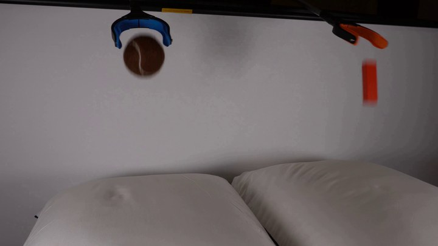
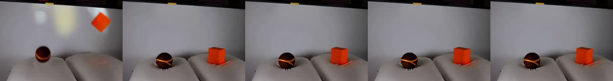
| Official Metric | CogVideoX-5B | + PhaseLock | Delta |
|---|---|---|---|
| MSE view | 0.3583 | 0.1695 | -0.1888 |
| Spatial view | 0.5588 | 0.4960 | -0.0628 |
| Spatiotemporal view | 0.2708 | 0.4548 | +0.1840 |
| Weighted spatial view | 0.1430 | 0.1645 | +0.0215 |
| Final score view | 0.3327 | 0.3212 | -0.0115 |
Text Prompt Static locked-off single-shot with fixed frame throughout filmed with constant framerate in real-time. The scene shows a realistic scientific demonstration. The scene only contains the described setup and actions. Two pillows are on a table and two grabber tools are positioned above them. The grabber tools release the brown tennis ball and the orange block.
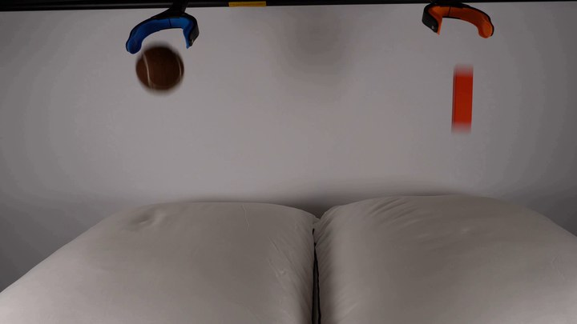
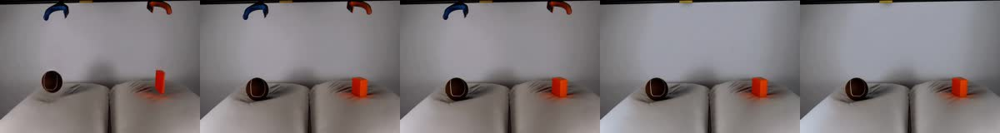
| Official Metric | CogVideoX-5B | + PhaseLock | Delta |
|---|---|---|---|
| MSE view | 0.1751 | 0.1037 | -0.0714 |
| Spatial view | 0.4692 | 0.4695 | +0.0003 |
| Spatiotemporal view | 0.0872 | 0.1650 | +0.0778 |
| Weighted spatial view | 0.0997 | 0.0999 | +0.0002 |
| Final score view | 0.2078 | 0.2095 | +0.0017 |
Text Prompt Static locked-off single-shot with fixed frame throughout filmed with constant framerate in real-time. The scene shows a realistic scientific demonstration. The scene only contains the described setup and actions. Two pillows are on a table and two grabber tools are positioned above them. The grabber tools release the brown tennis ball and the orange block.
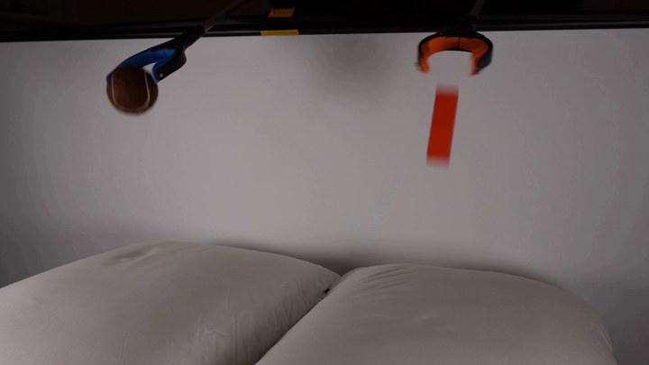
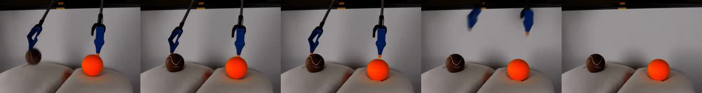
| Official Metric | CogVideoX-5B | + PhaseLock | Delta |
|---|---|---|---|
| MSE view | 0.0000 | 0.0000 | 0.0000 |
| Spatial view | 0.4619 | 0.4367 | -0.0252 |
| Spatiotemporal view | 0.0629 | 0.0499 | -0.0130 |
| Weighted spatial view | 0.2147 | 0.1756 | -0.0391 |
| Final score view | 0.1849 | 0.1655 | -0.0193 |
Text Prompt Static locked-off single-shot with fixed frame throughout filmed with constant framerate in real-time. The scene shows a realistic scientific demonstration. The scene only contains the described setup and actions. The blue-black grabber tool held the tennis ball above the cardstock and lowered it behind the cardstock. The cardstock sits on the black platform on top of a wooden table. The blue-black grabber tool places the orange tennis ball behind the clockwise-rotating cardstock on the table.
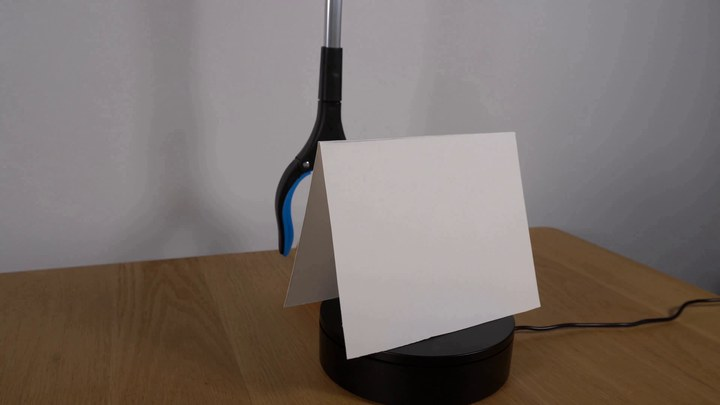
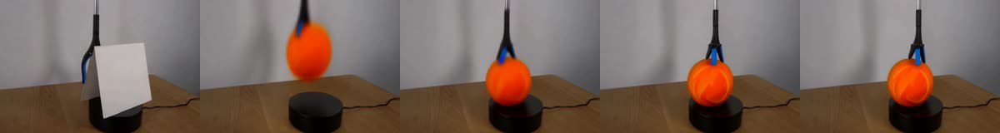
| Official Metric | CogVideoX-5B | + PhaseLock | Delta |
|---|---|---|---|
| MSE view | 0.0000 | 0.0000 | 0.0000 |
| Spatial view | 0.5598 | 0.4945 | -0.0653 |
| Spatiotemporal view | 0.0550 | 0.0466 | -0.0084 |
| Weighted spatial view | 0.2740 | 0.2085 | -0.0655 |
| Final score view | 0.2222 | 0.1874 | -0.0348 |
Text Prompt Static locked-off single-shot with fixed frame throughout filmed with constant framerate in real-time. The scene shows a realistic scientific demonstration. The scene only contains the described setup and actions. The blue-black grabber tool held the tennis ball above the cardstock and lowered it behind the cardstock. The cardstock sits on the black platform on top of a wooden table. The blue-black grabber tool places the orange tennis ball behind the clockwise-rotating cardstock on the table.
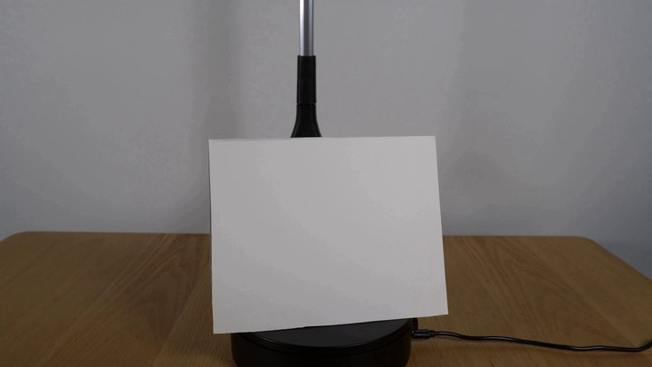
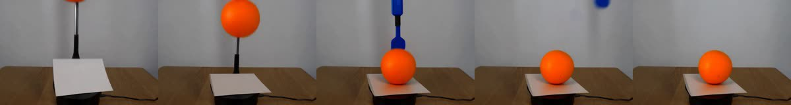
| Official Metric | CogVideoX-5B | + PhaseLock | Delta |
|---|---|---|---|
| MSE view | 0.0000 | 0.0000 | 0.0000 |
| Spatial view | 0.5375 | 0.5195 | -0.0180 |
| Spatiotemporal view | 0.0816 | 0.0598 | -0.0218 |
| Weighted spatial view | 0.2618 | 0.2486 | -0.0132 |
| Final score view | 0.2202 | 0.2070 | -0.0133 |
Text Prompt Static locked-off single-shot with fixed frame throughout filmed with constant framerate in real-time. The scene shows a realistic scientific demonstration. The scene only contains the described setup and actions. The blue-black grabber tool held the tennis ball above the cardstock and lowered it behind the cardstock. The cardstock sits on the black platform on top of a wooden table. The blue-black grabber tool places the orange tennis ball behind the clockwise-rotating cardstock on the table.
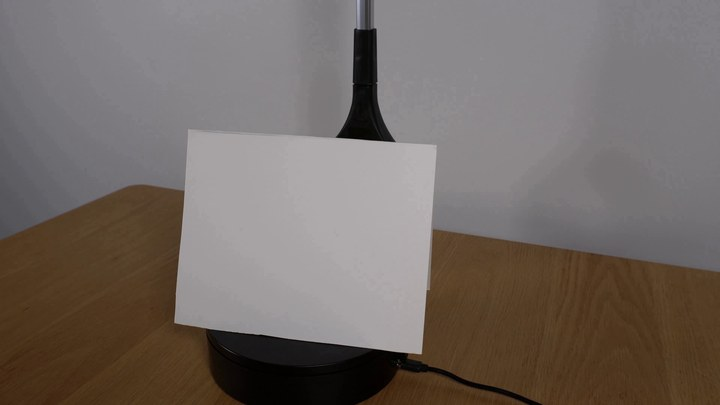
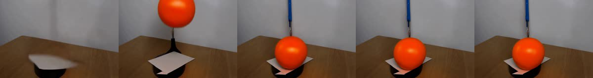
| Official Metric | CogVideoX-5B | + PhaseLock | Delta |
|---|---|---|---|
| MSE view | 0.3722 | 0.3145 | -0.0577 |
| Spatial view | 0.9462 | 0.8205 | -0.1257 |
| Spatiotemporal view | 0.7901 | 0.9132 | +0.1232 |
| Weighted spatial view | 0.5948 | 0.6688 | +0.0740 |
| Final score view | 0.6758 | 0.6793 | +0.0034 |
Text Prompt Static locked-off single-shot with fixed frame throughout filmed with constant framerate in real-time. The scene shows a realistic scientific demonstration. The scene only contains the described setup and actions. A light beige coffee table with a small yellow rubber duck on it. A mustard yellow couch is in the background. There is a black pipe that points from the left side to the right side of the table. The brown tennis ball rolls straight out of the black pipe and hits the rubber duck.
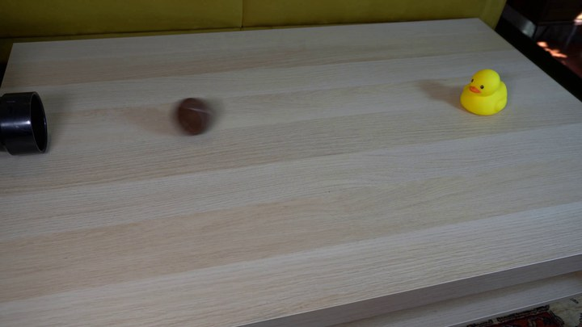
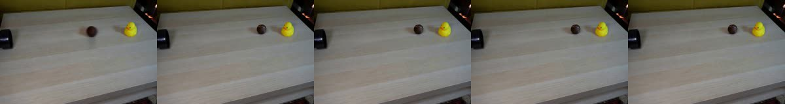
| Official Metric | CogVideoX-5B | + PhaseLock | Delta |
|---|---|---|---|
| MSE view | 0.2429 | 0.3632 | +0.1202 |
| Spatial view | 0.3731 | 0.9421 | +0.5690 |
| Spatiotemporal view | 0.0886 | 0.8730 | +0.7844 |
| Weighted spatial view | 0.2422 | 0.6607 | +0.4185 |
| Final score view | 0.2367 | 0.7097 | +0.4730 |
Text Prompt Static locked-off single-shot with fixed frame throughout filmed with constant framerate in real-time. The scene shows a realistic scientific demonstration. The scene only contains the described setup and actions. A light beige coffee table with a small yellow rubber duck on it. A mustard yellow couch is in the background. There is a black pipe that points from the left side to the right side of the table. The brown tennis ball rolls straight out of the black pipe and hits the rubber duck.
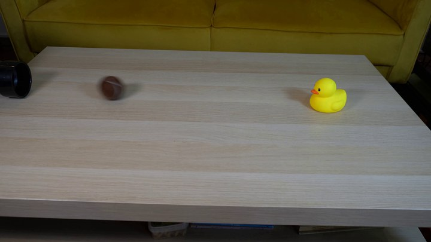
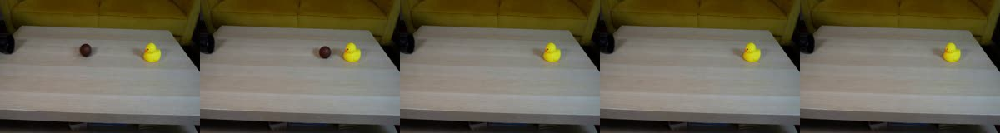
| Official Metric | CogVideoX-5B | + PhaseLock | Delta |
|---|---|---|---|
| MSE view | 1.0000 | 1.0000 | 0.0000 |
| Spatial view | 0.7735 | 0.2268 | -0.5467 |
| Spatiotemporal view | 0.0768 | 0.9485 | +0.8717 |
| Weighted spatial view | 0.3898 | 0.1497 | -0.2401 |
| Final score view | 0.5600 | 0.5813 | +0.0212 |
Text Prompt Static locked-off single-shot with fixed frame throughout filmed with constant framerate in real-time. The scene shows a realistic scientific demonstration. The scene only contains the described setup and actions. A light beige coffee table with a small yellow rubber duck on it. A mustard yellow couch is in the background. There is a black pipe that points from the left side to the right side of the table. The brown tennis ball rolls straight out of the black pipe and hits the rubber duck.
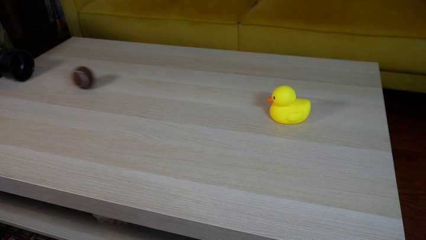
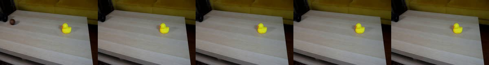
| Official Metric | CogVideoX-5B | + PhaseLock | Delta |
|---|---|---|---|
| MSE view | 0.1733 | 0.1820 | +0.0087 |
| Spatial view | 0.3595 | 0.0826 | -0.2769 |
| Spatiotemporal view | 0.0590 | 0.8976 | +0.8386 |
| Weighted spatial view | 0.1669 | 0.0659 | -0.1010 |
| Final score view | 0.1897 | 0.3070 | +0.1173 |
Text Prompt Static locked-off single-shot with fixed frame throughout filmed with constant framerate in real-time. The scene shows a realistic scientific demonstration. The scene only contains the described setup and actions. A light-colored wooden coffee table with a few small objects on it, including a brown tennis ball and a smaller red ball. The orange tennis ball rolls straight out of the black pipe over the entire table towards the right side.
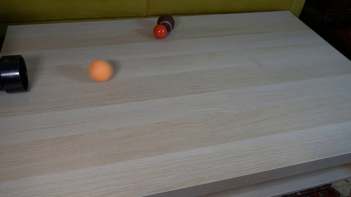
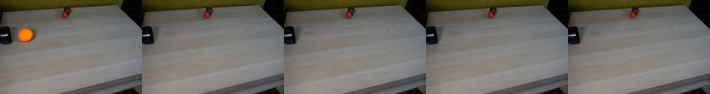
| Official Metric | CogVideoX-5B | + PhaseLock | Delta |
|---|---|---|---|
| MSE view | 0.1447 | 0.1738 | +0.0292 |
| Spatial view | 0.3113 | 0.3255 | +0.0142 |
| Spatiotemporal view | 0.0277 | 0.1096 | +0.0819 |
| Weighted spatial view | 0.0818 | 0.0985 | +0.0167 |
| Final score view | 0.1414 | 0.1769 | +0.0355 |
Text Prompt Static locked-off single-shot with fixed frame throughout filmed with constant framerate in real-time. The scene shows a realistic scientific demonstration. The scene only contains the described setup and actions. A light-colored wooden coffee table with a few small objects on it, including a brown tennis ball and a smaller red ball. The orange tennis ball rolls straight out of the black pipe over the entire table towards the right side.
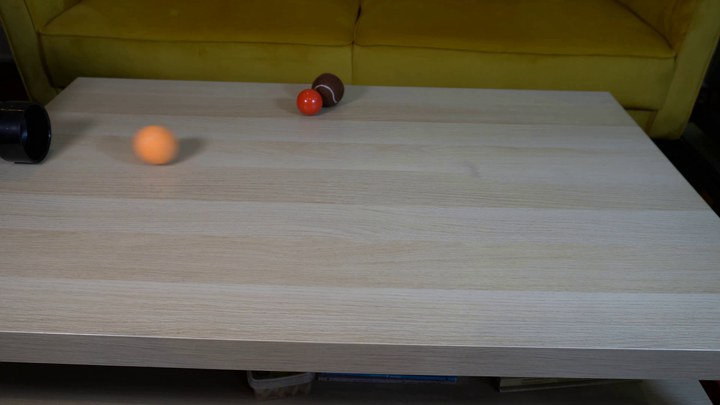
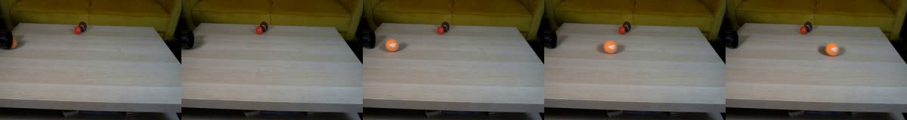
| Official Metric | CogVideoX-5B | + PhaseLock | Delta |
|---|---|---|---|
| MSE view | 0.1183 | 0.1048 | -0.0135 |
| Spatial view | 0.1297 | 0.3813 | +0.2516 |
| Spatiotemporal view | 0.4835 | 0.3164 | -0.1671 |
| Weighted spatial view | 0.0640 | 0.1991 | +0.1351 |
| Final score view | 0.1989 | 0.2504 | +0.0515 |
Text Prompt Static locked-off single-shot with fixed frame throughout filmed with constant framerate in real-time. The scene shows a realistic scientific demonstration. The scene only contains the described setup and actions. A light-colored wooden coffee table with a few small objects on it, including a brown tennis ball and a smaller red ball. The orange tennis ball rolls straight out of the black pipe over the entire table towards the right side.
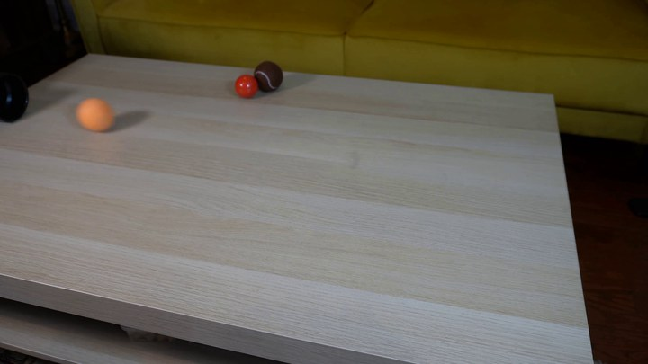
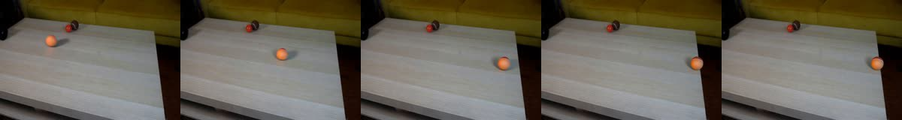
| Official Metric | CogVideoX-5B | + PhaseLock | Delta |
|---|---|---|---|
| MSE view | 0.1784 | 0.1921 | +0.0137 |
| Spatial view | 0.5393 | 0.4005 | -0.1387 |
| Spatiotemporal view | 1.0000 | 1.0000 | 0.0000 |
| Weighted spatial view | 0.7351 | 0.6042 | -0.1309 |
| Final score view | 0.6132 | 0.5492 | -0.0640 |
Text Prompt Static locked-off single-shot with fixed frame throughout filmed with constant framerate in real-time. The scene shows a realistic scientific demonstration. The scene only contains the described setup and actions. The black plastic crate sits on a wooden table. The orange inflatable basketball is released over the black plastic crate.
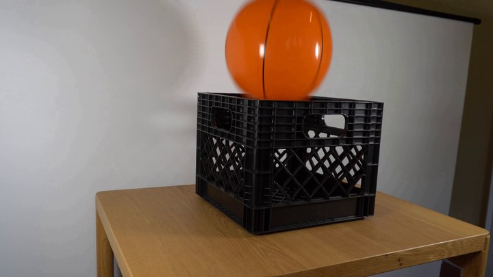
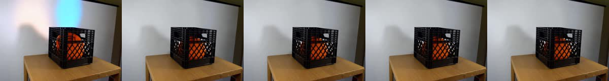
| Official Metric | CogVideoX-5B | + PhaseLock | Delta |
|---|---|---|---|
| MSE view | 0.1435 | 0.1014 | -0.0421 |
| Spatial view | 0.4193 | 0.2913 | -0.1280 |
| Spatiotemporal view | 1.0000 | 1.0000 | 0.0000 |
| Weighted spatial view | 0.3322 | 0.4519 | +0.1197 |
| Final score view | 0.4738 | 0.4612 | -0.0126 |
Text Prompt Static locked-off single-shot with fixed frame throughout filmed with constant framerate in real-time. The scene shows a realistic scientific demonstration. The scene only contains the described setup and actions. The black plastic crate sits on a wooden table. The orange inflatable basketball is released over the black plastic crate.
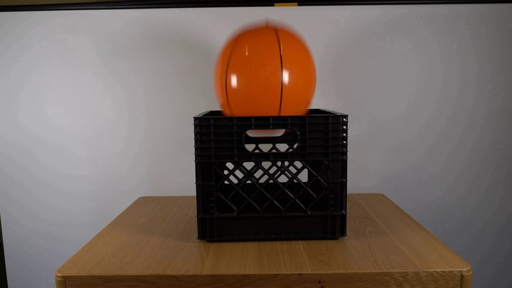
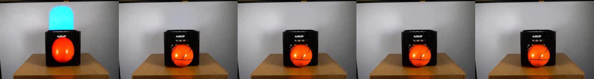
| Official Metric | CogVideoX-5B | + PhaseLock | Delta |
|---|---|---|---|
| MSE view | 0.2322 | 0.0899 | -0.1424 |
| Spatial view | 0.5534 | 0.2462 | -0.3072 |
| Spatiotemporal view | 1.0000 | 1.0000 | 0.0000 |
| Weighted spatial view | 0.9397 | 0.4742 | -0.4655 |
| Final score view | 0.6813 | 0.4526 | -0.2288 |
Text Prompt Static locked-off single-shot with fixed frame throughout filmed with constant framerate in real-time. The scene shows a realistic scientific demonstration. The scene only contains the described setup and actions. The black plastic crate sits on a wooden table. The orange inflatable basketball is released over the black plastic crate.
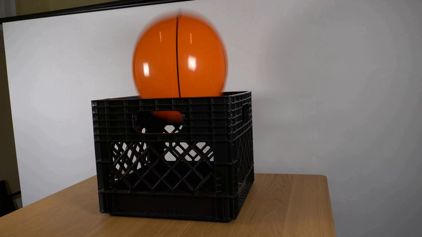
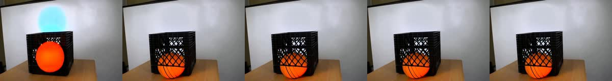
| Official Metric | CogVideoX-5B | + PhaseLock | Delta |
|---|---|---|---|
| MSE view | 1.0000 | 1.0000 | 0.0000 |
| Spatial view | 0.4184 | 0.5817 | +0.1633 |
| Spatiotemporal view | 0.6107 | 0.8455 | +0.2348 |
| Weighted spatial view | 0.1631 | 0.2331 | +0.0700 |
| Final score view | 0.5480 | 0.6651 | +0.1170 |
Text Prompt Static locked-off single-shot with fixed frame throughout filmed with constant framerate in real-time. The scene shows a realistic scientific demonstration. The scene only contains the described setup and actions. The green kinetic sand is located on a wooden table, and the blue-black grabber tool is suspended over it. The blue-black grabber tool releases the blue tennis ball above a pile of green kinetic sand.
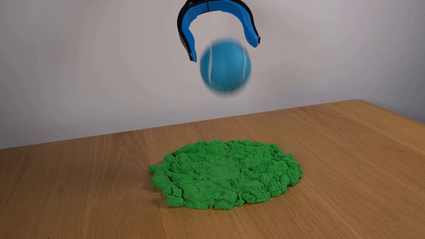
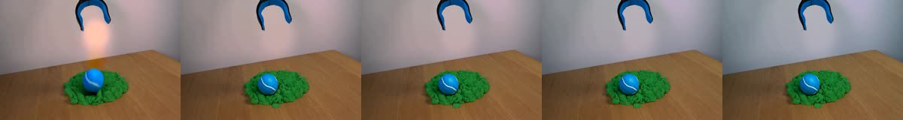
| Official Metric | CogVideoX-5B | + PhaseLock | Delta |
|---|---|---|---|
| MSE view | 1.0000 | 1.0000 | 0.0000 |
| Spatial view | 0.5285 | 0.5687 | +0.0403 |
| Spatiotemporal view | 0.4370 | 0.7851 | +0.3482 |
| Weighted spatial view | 0.2276 | 0.2126 | -0.0150 |
| Final score view | 0.5483 | 0.6416 | +0.0933 |
Text Prompt Static locked-off single-shot with fixed frame throughout filmed with constant framerate in real-time. The scene shows a realistic scientific demonstration. The scene only contains the described setup and actions. The green kinetic sand is located on a wooden table, and the blue-black grabber tool is suspended over it. The blue-black grabber tool releases the blue tennis ball above a pile of green kinetic sand.
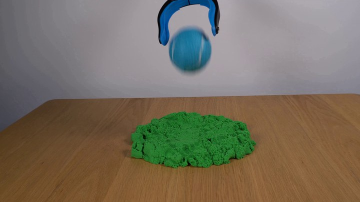
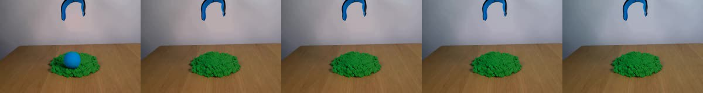
| Official Metric | CogVideoX-5B | + PhaseLock | Delta |
|---|---|---|---|
| MSE view | 1.0000 | 1.0000 | 0.0000 |
| Spatial view | 0.4020 | 0.8738 | +0.4718 |
| Spatiotemporal view | 0.4402 | 0.8511 | +0.4109 |
| Weighted spatial view | 0.1844 | 0.3550 | +0.1706 |
| Final score view | 0.5067 | 0.7700 | +0.2633 |
Text Prompt Static locked-off single-shot with fixed frame throughout filmed with constant framerate in real-time. The scene shows a realistic scientific demonstration. The scene only contains the described setup and actions. The green kinetic sand is located on a wooden table, and the blue-black grabber tool is suspended over it. The blue-black grabber tool releases the blue tennis ball above a pile of green kinetic sand.
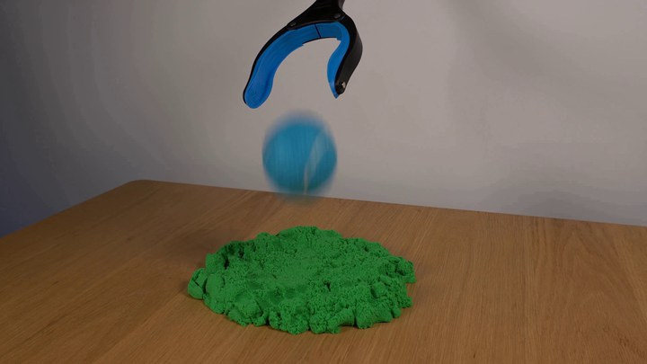
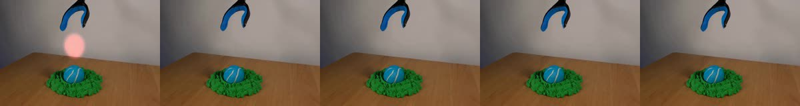
| Official Metric | CogVideoX-5B | + PhaseLock | Delta |
|---|---|---|---|
| MSE view | 0.2752 | 0.1868 | -0.0884 |
| Spatial view | 0.0387 | 0.0401 | +0.0014 |
| Spatiotemporal view | 0.3460 | 0.8814 | +0.5354 |
| Weighted spatial view | 0.0192 | 0.0209 | +0.0017 |
| Final score view | 0.1698 | 0.2823 | +0.1125 |
Text Prompt Static locked-off single-shot with fixed frame throughout filmed with constant framerate in real-time. The scene shows a realistic scientific demonstration. The scene only contains the described setup and actions. A simple ramp made of cardboard, propped up by a blue block on a light-colored wooden table. There's a black pipe to the left of the frame that directly points towards it. The yellow tennis ball rolls straight out of the black pipe onto the ramp.
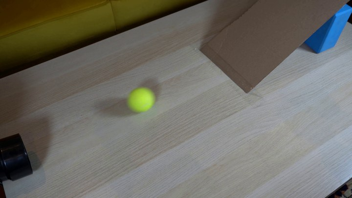
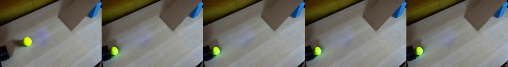
| Official Metric | CogVideoX-5B | + PhaseLock | Delta |
|---|---|---|---|
| MSE view | 0.3531 | 0.3761 | +0.0230 |
| Spatial view | 0.5944 | 0.0452 | -0.5492 |
| Spatiotemporal view | 0.4585 | 0.9973 | +0.5388 |
| Weighted spatial view | 0.3249 | 0.0306 | -0.2942 |
| Final score view | 0.4327 | 0.3623 | -0.0704 |
Text Prompt Static locked-off single-shot with fixed frame throughout filmed with constant framerate in real-time. The scene shows a realistic scientific demonstration. The scene only contains the described setup and actions. A simple ramp made of cardboard, propped up by a blue block on a light-colored wooden table. There's a black pipe to the left of the frame that directly points towards it. The yellow tennis ball rolls straight out of the black pipe onto the ramp.
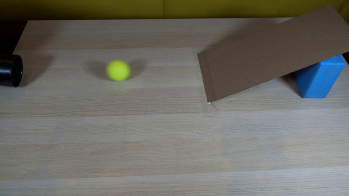
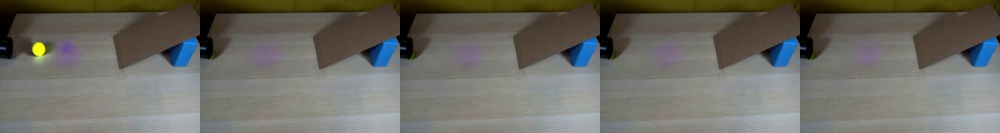
| Official Metric | CogVideoX-5B | + PhaseLock | Delta |
|---|---|---|---|
| MSE view | 0.4250 | 0.3509 | -0.0742 |
| Spatial view | 0.1778 | 0.1672 | -0.0106 |
| Spatiotemporal view | 1.0000 | 0.9997 | -0.0003 |
| Weighted spatial view | 0.1319 | 0.1098 | -0.0221 |
| Final score view | 0.4337 | 0.4069 | -0.0268 |
Text Prompt Static locked-off single-shot with fixed frame throughout filmed with constant framerate in real-time. The scene shows a realistic scientific demonstration. The scene only contains the described setup and actions. A simple ramp made of cardboard, propped up by a blue block on a light-colored wooden table. There's a black pipe to the left of the frame that directly points towards it. The yellow tennis ball rolls straight out of the black pipe onto the ramp.
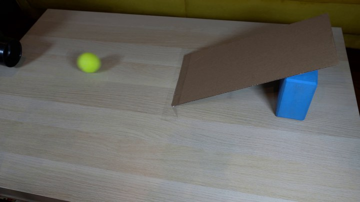
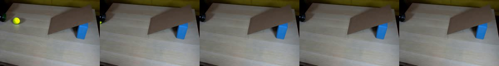
| Official Metric | CogVideoX-5B | + PhaseLock | Delta |
|---|---|---|---|
| MSE view | 0.2475 | 0.0218 | -0.2257 |
| Spatial view | 0.1758 | 0.0449 | -0.1309 |
| Spatiotemporal view | 0.2302 | 0.7171 | +0.4869 |
| Weighted spatial view | 0.0842 | 0.0150 | -0.0692 |
| Final score view | 0.1844 | 0.1997 | +0.0153 |
Text Prompt Static locked-off single-shot with fixed frame throughout filmed with constant framerate in real-time. The scene shows a realistic scientific demonstration. The scene only contains the described setup and actions. A light wood coffee table in the foreground with a black pipe on the left end of the table. The grey tennis ball rolls out of the pipe over the entire table towards the right.
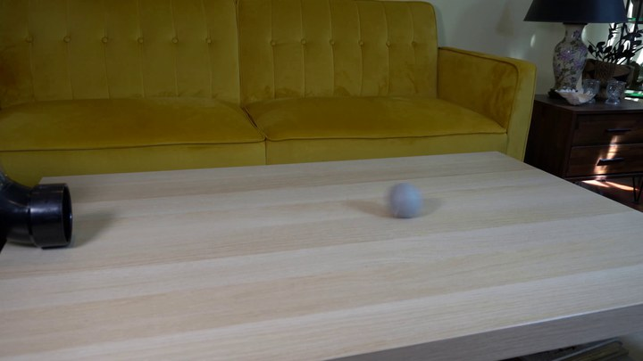
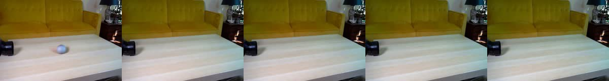
| Official Metric | CogVideoX-5B | + PhaseLock | Delta |
|---|---|---|---|
| MSE view | 0.1864 | 0.1537 | -0.0327 |
| Spatial view | 0.0762 | 0.1611 | +0.0849 |
| Spatiotemporal view | 0.0297 | 0.5252 | +0.4956 |
| Weighted spatial view | 0.0291 | 0.0662 | +0.0371 |
| Final score view | 0.0803 | 0.2266 | +0.1462 |
Text Prompt Static locked-off single-shot with fixed frame throughout filmed with constant framerate in real-time. The scene shows a realistic scientific demonstration. The scene only contains the described setup and actions. A light wood coffee table in the foreground with a black pipe on the left end of the table. The grey tennis ball rolls out of the pipe over the entire table towards the right.
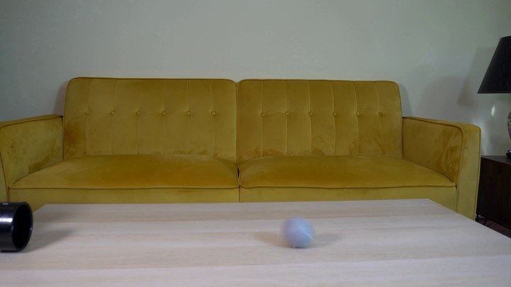
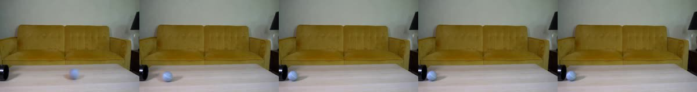
| Official Metric | CogVideoX-5B | + PhaseLock | Delta |
|---|---|---|---|
| MSE view | 0.1064 | 0.1230 | +0.0166 |
| Spatial view | 0.3456 | 0.0649 | -0.2807 |
| Spatiotemporal view | 0.0279 | 0.7852 | +0.7574 |
| Weighted spatial view | 0.1280 | 0.0406 | -0.0874 |
| Final score view | 0.1520 | 0.2534 | +0.1015 |
Text Prompt Static locked-off single-shot with fixed frame throughout filmed with constant framerate in real-time. The scene shows a realistic scientific demonstration. The scene only contains the described setup and actions. A light wood coffee table in the foreground with a black pipe on the left end of the table. The grey tennis ball rolls out of the pipe over the entire table towards the right.
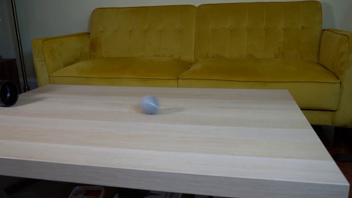
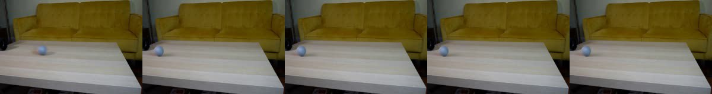
| Official Metric | CogVideoX-5B | + PhaseLock | Delta |
|---|---|---|---|
| MSE view | 0.1601 | 0.1420 | -0.0181 |
| Spatial view | 0.0396 | 0.0520 | +0.0125 |
| Spatiotemporal view | 0.3378 | 0.9261 | +0.5883 |
| Weighted spatial view | 0.0160 | 0.0326 | +0.0166 |
| Final score view | 0.1384 | 0.2882 | +0.1498 |
Text Prompt Static locked-off single-shot with fixed frame throughout filmed with constant framerate in real-time. The scene shows a realistic scientific demonstration. The scene only contains the described setup and actions. A piece of clear glass resting on the edge of a light-colored wooden table against a plain white wall. The blue tennis ball rolls from the wooden table over the glass.
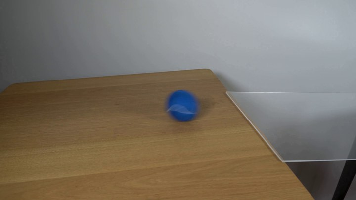
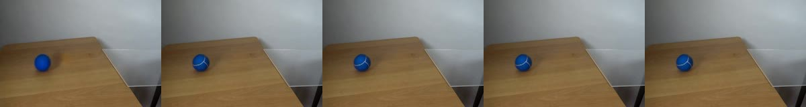
| Official Metric | CogVideoX-5B | + PhaseLock | Delta |
|---|---|---|---|
| MSE view | 0.1942 | 0.1439 | -0.0503 |
| Spatial view | 0.7025 | 0.6456 | -0.0569 |
| Spatiotemporal view | 0.2004 | 0.0315 | -0.1689 |
| Weighted spatial view | 0.2128 | 0.2355 | +0.0227 |
| Final score view | 0.3275 | 0.2641 | -0.0633 |
Text Prompt Static locked-off single-shot with fixed frame throughout filmed with constant framerate in real-time. The scene shows a realistic scientific demonstration. The scene only contains the described setup and actions. A piece of clear glass resting on the edge of a light-colored wooden table against a plain white wall. The blue tennis ball rolls from the wooden table over the glass.
| Official Metric | CogVideoX-5B | + PhaseLock | Delta |
|---|---|---|---|
| MSE view | 0.2786 | 0.1842 | -0.0944 |
| Spatial view | 0.5972 | 0.6045 | +0.0072 |
| Spatiotemporal view | 0.2020 | 0.0345 | -0.1675 |
| Weighted spatial view | 0.1578 | 0.2147 | +0.0569 |
| Final score view | 0.3089 | 0.2595 | -0.0494 |
Text Prompt Static locked-off single-shot with fixed frame throughout filmed with constant framerate in real-time. The scene shows a realistic scientific demonstration. The scene only contains the described setup and actions. A piece of clear glass resting on the edge of a light-colored wooden table against a plain white wall. The blue tennis ball rolls from the wooden table over the glass.
| Official Metric | CogVideoX-5B | + PhaseLock | Delta |
|---|---|---|---|
| MSE view | 0.2386 | 0.2211 | -0.0175 |
| Spatial view | 0.2388 | 0.0920 | -0.1468 |
| Spatiotemporal view | 0.8413 | 0.8368 | -0.0045 |
| Weighted spatial view | 0.1766 | 0.0580 | -0.1186 |
| Final score view | 0.3738 | 0.3020 | -0.0718 |
Text Prompt Static locked-off single-shot with fixed frame throughout filmed with constant framerate in real-time. The scene shows a realistic scientific demonstration. The scene only contains the described setup and actions. A light-colored coffee table with two tennis balls, one orange and one brown, placed near the center, back to back. A black pipe sits on the table on the left side and points towards the two tennis balls. The grey tennis ball rolls straight out of a black pipe from the left and hits the brown tennis ball.
| Official Metric | CogVideoX-5B | + PhaseLock | Delta |
|---|---|---|---|
| MSE view | 0.1781 | 0.1788 | +0.0008 |
| Spatial view | 0.3232 | 0.0904 | -0.2328 |
| Spatiotemporal view | 0.0405 | 0.8206 | +0.7801 |
| Weighted spatial view | 0.1716 | 0.0666 | -0.1050 |
| Final score view | 0.1783 | 0.2891 | +0.1108 |
Text Prompt Static locked-off single-shot with fixed frame throughout filmed with constant framerate in real-time. The scene shows a realistic scientific demonstration. The scene only contains the described setup and actions. A light-colored coffee table with two tennis balls, one orange and one brown, placed near the center, back to back. A black pipe sits on the table on the left side and points towards the two tennis balls. The grey tennis ball rolls straight out of a black pipe from the left and hits the brown tennis ball.
| Official Metric | CogVideoX-5B | + PhaseLock | Delta |
|---|---|---|---|
| MSE view | 0.2244 | 0.2071 | -0.0173 |
| Spatial view | 0.0868 | 0.0095 | -0.0773 |
| Spatiotemporal view | 0.5025 | 0.8566 | +0.3541 |
| Weighted spatial view | 0.0873 | 0.0054 | -0.0819 |
| Final score view | 0.2252 | 0.2697 | +0.0444 |
Text Prompt Static locked-off single-shot with fixed frame throughout filmed with constant framerate in real-time. The scene shows a realistic scientific demonstration. The scene only contains the described setup and actions. A light-colored coffee table with two tennis balls, one orange and one brown, placed near the center, back to back. A black pipe sits on the table on the left side and points towards the two tennis balls. The grey tennis ball rolls straight out of a black pipe from the left and hits the brown tennis ball.
| Official Metric | CogVideoX-5B | + PhaseLock | Delta |
|---|---|---|---|
| MSE view | 0.9781 | 0.6945 | -0.2836 |
| Spatial view | 1.0000 | 1.0000 | 0.0000 |
| Spatiotemporal view | 0.1579 | 1.0000 | +0.8421 |
| Weighted spatial view | 0.9123 | 1.0000 | +0.0877 |
| Final score view | 0.7621 | 0.9236 | +0.1616 |
Text Prompt Static locked-off single-shot with fixed frame throughout filmed with constant framerate in real-time. The scene shows a realistic scientific demonstration. The scene only contains the described setup and actions. A light-colored wooden tabletop with two pipes at the edges. The blue and the yellow tennis ball roll out of the pipes and collide with the same speed.
| Official Metric | CogVideoX-5B | + PhaseLock | Delta |
|---|---|---|---|
| MSE view | 0.7914 | 0.8674 | +0.0760 |
| Spatial view | 1.0000 | 0.8042 | -0.1958 |
| Spatiotemporal view | 0.1279 | 1.0000 | +0.8721 |
| Weighted spatial view | 0.6064 | 0.7361 | +0.1297 |
| Final score view | 0.6314 | 0.8519 | +0.2205 |
Text Prompt Static locked-off single-shot with fixed frame throughout filmed with constant framerate in real-time. The scene shows a realistic scientific demonstration. The scene only contains the described setup and actions. A light-colored wooden tabletop with two pipes at the edges. The blue and the yellow tennis ball roll out of the pipes and collide with the same speed.
| Official Metric | CogVideoX-5B | + PhaseLock | Delta |
|---|---|---|---|
| MSE view | 0.8973 | 0.7831 | -0.1142 |
| Spatial view | 0.7590 | 0.7235 | -0.0355 |
| Spatiotemporal view | 1.0000 | 1.0000 | 0.0000 |
| Weighted spatial view | 0.5049 | 0.6080 | +0.1030 |
| Final score view | 0.7903 | 0.7787 | -0.0117 |
Text Prompt Static locked-off single-shot with fixed frame throughout filmed with constant framerate in real-time. The scene shows a realistic scientific demonstration. The scene only contains the described setup and actions. A light-colored wooden tabletop with two pipes at the edges. The blue and the yellow tennis ball roll out of the pipes and collide with the same speed.
| Official Metric | CogVideoX-5B | + PhaseLock | Delta |
|---|---|---|---|
| MSE view | 0.0940 | 0.1008 | +0.0068 |
| Spatial view | 0.0928 | 0.0864 | -0.0063 |
| Spatiotemporal view | 0.0456 | 0.8446 | +0.7990 |
| Weighted spatial view | 0.0517 | 0.0853 | +0.0337 |
| Final score view | 0.0710 | 0.2793 | +0.2083 |
Text Prompt Static locked-off single-shot with fixed frame throughout filmed with constant framerate in real-time. The scene shows a realistic scientific demonstration. The scene only contains the described setup and actions. A row of colorful wooden blocks has been lined up on a wooden table next to a black platform. The wooden stick attached to the black platform rotates clockwise and hits the first block.
| Official Metric | CogVideoX-5B | + PhaseLock | Delta |
|---|---|---|---|
| MSE view | 0.0923 | 0.0957 | +0.0035 |
| Spatial view | 0.4409 | 0.1386 | -0.3023 |
| Spatiotemporal view | 0.0708 | 0.8220 | +0.7512 |
| Weighted spatial view | 0.2725 | 0.1311 | -0.1414 |
| Final score view | 0.2191 | 0.2969 | +0.0778 |
Text Prompt Static locked-off single-shot with fixed frame throughout filmed with constant framerate in real-time. The scene shows a realistic scientific demonstration. The scene only contains the described setup and actions. A row of colorful wooden blocks has been lined up on a wooden table next to a black platform. The wooden stick attached to the black platform rotates clockwise and hits the first block.
| Official Metric | CogVideoX-5B | + PhaseLock | Delta |
|---|---|---|---|
| MSE view | 0.1358 | 0.1326 | -0.0033 |
| Spatial view | 0.2181 | 0.1966 | -0.0215 |
| Spatiotemporal view | 0.6242 | 0.5617 | -0.0624 |
| Weighted spatial view | 0.1934 | 0.1767 | -0.0166 |
| Final score view | 0.2929 | 0.2669 | -0.0260 |
Text Prompt Static locked-off single-shot with fixed frame throughout filmed with constant framerate in real-time. The scene shows a realistic scientific demonstration. The scene only contains the described setup and actions. A row of colorful wooden blocks has been lined up on a wooden table next to a black platform. The wooden stick attached to the black platform rotates clockwise and hits the first block.
| Official Metric | CogVideoX-5B | + PhaseLock | Delta |
|---|---|---|---|
| MSE view | 1.0000 | 1.0000 | 0.0000 |
| Spatial view | 0.0000 | 0.0000 | 0.0000 |
| Spatiotemporal view | 0.6187 | 0.6187 | 0.0000 |
| Weighted spatial view | 0.0000 | 0.0000 | 0.0000 |
| Final score view | 0.4047 | 0.4047 | 0.0000 |
Text Prompt Static locked-off single-shot with fixed frame throughout filmed with constant framerate in real-time. The scene shows a realistic scientific demonstration. The scene only contains the described setup and actions. The balloon is attached to a black hose that points upwards from behind a wooden table. Air is being pumped into the black balloon.
| Official Metric | CogVideoX-5B | + PhaseLock | Delta |
|---|---|---|---|
| MSE view | 1.0000 | 1.0000 | 0.0000 |
| Spatial view | 0.0089 | 0.0000 | -0.0089 |
| Spatiotemporal view | 0.5542 | 0.5542 | 0.0000 |
| Weighted spatial view | 0.0044 | 0.0000 | -0.0044 |
| Final score view | 0.3919 | 0.3886 | -0.0033 |
Text Prompt Static locked-off single-shot with fixed frame throughout filmed with constant framerate in real-time. The scene shows a realistic scientific demonstration. The scene only contains the described setup and actions. The balloon is attached to a black hose that points upwards from behind a wooden table. Air is being pumped into the black balloon.
| Official Metric | CogVideoX-5B | + PhaseLock | Delta |
|---|---|---|---|
| MSE view | 1.0000 | 1.0000 | 0.0000 |
| Spatial view | 0.0000 | 0.0000 | 0.0000 |
| Spatiotemporal view | 0.5684 | 0.5684 | 0.0000 |
| Weighted spatial view | 0.0000 | 0.0000 | 0.0000 |
| Final score view | 0.3921 | 0.3921 | 0.0000 |
Text Prompt Static locked-off single-shot with fixed frame throughout filmed with constant framerate in real-time. The scene shows a realistic scientific demonstration. The scene only contains the described setup and actions. The balloon is attached to a black hose that points upwards from behind a wooden table. Air is being pumped into the black balloon.
| Official Metric | CogVideoX-5B | + PhaseLock | Delta |
|---|---|---|---|
| MSE view | 0.7064 | 0.5542 | -0.1522 |
| Spatial view | 0.6899 | 0.8356 | +0.1457 |
| Spatiotemporal view | 0.2519 | 0.6794 | +0.4275 |
| Weighted spatial view | 0.3770 | 0.5357 | +0.1587 |
| Final score view | 0.5063 | 0.6512 | +0.1449 |
Text Prompt Static locked-off single-shot with fixed frame throughout filmed with constant framerate in real-time. The scene shows a realistic scientific demonstration. The scene only contains the described setup and actions. One half of a tangerine has been placed on a glass cutting board. The knife slices through the tangerine.
| Official Metric | CogVideoX-5B | + PhaseLock | Delta |
|---|---|---|---|
| MSE view | 0.5782 | 0.4579 | -0.1204 |
| Spatial view | 0.3566 | 0.4138 | +0.0572 |
| Spatiotemporal view | 0.1064 | 0.1658 | +0.0594 |
| Weighted spatial view | 0.3302 | 0.3748 | +0.0446 |
| Final score view | 0.3428 | 0.3530 | +0.0102 |
Text Prompt Static locked-off single-shot with fixed frame throughout filmed with constant framerate in real-time. The scene shows a realistic scientific demonstration. The scene only contains the described setup and actions. One half of a tangerine has been placed on a glass cutting board. The knife slices through the tangerine.
| Official Metric | CogVideoX-5B | + PhaseLock | Delta |
|---|---|---|---|
| MSE view | 0.7257 | 0.6413 | -0.0844 |
| Spatial view | 0.7245 | 0.6810 | -0.0435 |
| Spatiotemporal view | 0.0920 | 0.3009 | +0.2088 |
| Weighted spatial view | 0.3986 | 0.5457 | +0.1471 |
| Final score view | 0.4852 | 0.5422 | +0.0570 |
Text Prompt Static locked-off single-shot with fixed frame throughout filmed with constant framerate in real-time. The scene shows a realistic scientific demonstration. The scene only contains the described setup and actions. One half of a tangerine has been placed on a glass cutting board. The knife slices through the tangerine.
| Official Metric | CogVideoX-5B | + PhaseLock | Delta |
|---|---|---|---|
| MSE view | 0.5305 | 0.4600 | -0.0706 |
| Spatial view | 0.7309 | 0.8406 | +0.1097 |
| Spatiotemporal view | 0.0998 | 0.1373 | +0.0375 |
| Weighted spatial view | 0.3036 | 0.4300 | +0.1265 |
| Final score view | 0.4162 | 0.4670 | +0.0508 |
Text Prompt Static locked-off single-shot with fixed frame throughout filmed with constant framerate in real-time. The scene shows a realistic scientific demonstration. The scene only contains the described setup and actions. Two blue-black grabber tools pull the piece of green paper from opposite corners, causing it to tear.
| Official Metric | CogVideoX-5B | + PhaseLock | Delta |
|---|---|---|---|
| MSE view | 0.6432 | 0.5490 | -0.0941 |
| Spatial view | 0.8237 | 0.7408 | -0.0829 |
| Spatiotemporal view | 0.0940 | 0.4617 | +0.3677 |
| Weighted spatial view | 0.5780 | 0.5264 | -0.0516 |
| Final score view | 0.5347 | 0.5695 | +0.0348 |
Text Prompt Static locked-off single-shot with fixed frame throughout filmed with constant framerate in real-time. The scene shows a realistic scientific demonstration. The scene only contains the described setup and actions. Two blue-black grabber tools pull the piece of green paper from opposite corners, causing it to tear.
| Official Metric | CogVideoX-5B | + PhaseLock | Delta |
|---|---|---|---|
| MSE view | 0.6678 | 0.5108 | -0.1570 |
| Spatial view | 0.6652 | 0.7191 | +0.0539 |
| Spatiotemporal view | 1.0000 | 1.0000 | 0.0000 |
| Weighted spatial view | 0.4829 | 0.3247 | -0.1582 |
| Final score view | 0.7040 | 0.6387 | -0.0653 |
Text Prompt Static locked-off single-shot with fixed frame throughout filmed with constant framerate in real-time. The scene shows a realistic scientific demonstration. The scene only contains the described setup and actions. Two blue-black grabber tools pull the piece of green paper from opposite corners, causing it to tear.
| Official Metric | CogVideoX-5B | + PhaseLock | Delta |
|---|---|---|---|
| MSE view | 0.0910 | 0.1061 | +0.0151 |
| Spatial view | 0.5941 | 0.5153 | -0.0788 |
| Spatiotemporal view | 0.1849 | 0.1764 | -0.0085 |
| Weighted spatial view | 0.2855 | 0.1891 | -0.0964 |
| Final score view | 0.2889 | 0.2467 | -0.0422 |
Text Prompt Static locked-off single-shot with fixed frame throughout filmed with constant framerate in real-time. The scene shows a realistic scientific demonstration. The scene only contains the described setup and actions. The mug is sitting on a wooden surface. The blue-black grabber tool drops the white ceramic domino into the mug that is filled with a dark-colored liquid.
| Official Metric | CogVideoX-5B | + PhaseLock | Delta |
|---|---|---|---|
| MSE view | 0.1721 | 0.1418 | -0.0303 |
| Spatial view | 0.6954 | 0.5621 | -0.1333 |
| Spatiotemporal view | 0.2300 | 0.2394 | +0.0093 |
| Weighted spatial view | 0.1853 | 0.1361 | -0.0493 |
| Final score view | 0.3207 | 0.2698 | -0.0509 |
Text Prompt Static locked-off single-shot with fixed frame throughout filmed with constant framerate in real-time. The scene shows a realistic scientific demonstration. The scene only contains the described setup and actions. The mug is sitting on a wooden surface. The blue-black grabber tool drops the white ceramic domino into the mug that is filled with a dark-colored liquid.
| Official Metric | CogVideoX-5B | + PhaseLock | Delta |
|---|---|---|---|
| MSE view | 0.1494 | 0.1119 | -0.0375 |
| Spatial view | 1.0000 | 0.5204 | -0.4796 |
| Spatiotemporal view | 0.3424 | 0.3170 | -0.0254 |
| Weighted spatial view | 0.3516 | 0.2194 | -0.1321 |
| Final score view | 0.4609 | 0.2922 | -0.1687 |
Text Prompt Static locked-off single-shot with fixed frame throughout filmed with constant framerate in real-time. The scene shows a realistic scientific demonstration. The scene only contains the described setup and actions. The mug is sitting on a wooden surface. The blue-black grabber tool drops the white ceramic domino into the mug that is filled with a dark-colored liquid.
| Official Metric | CogVideoX-5B | + PhaseLock | Delta |
|---|---|---|---|
| MSE view | 0.0754 | 0.0795 | +0.0041 |
| Spatial view | 0.2757 | 0.3127 | +0.0370 |
| Spatiotemporal view | 0.2563 | 0.3860 | +0.1297 |
| Weighted spatial view | 0.0507 | 0.1313 | +0.0806 |
| Final score view | 0.1645 | 0.2274 | +0.0629 |
Text Prompt Static locked-off single-shot with fixed frame throughout filmed with constant framerate in real-time. The scene shows a realistic scientific demonstration. The scene only contains the described setup and actions. Two rows of alternating black and white dominoes have been set up on a wooden table with a gap between the two rows. The wooden stick attached to the black platform rotates clockwise and knocks the first domino.
| Official Metric | CogVideoX-5B | + PhaseLock | Delta |
|---|---|---|---|
| MSE view | 0.1939 | 0.2043 | +0.0104 |
| Spatial view | 0.5299 | 0.6513 | +0.1215 |
| Spatiotemporal view | 0.3372 | 0.6219 | +0.2847 |
| Weighted spatial view | 0.1562 | 0.2757 | +0.1195 |
| Final score view | 0.3043 | 0.4383 | +0.1340 |
Text Prompt Static locked-off single-shot with fixed frame throughout filmed with constant framerate in real-time. The scene shows a realistic scientific demonstration. The scene only contains the described setup and actions. Two rows of alternating black and white dominoes have been set up on a wooden table with a gap between the two rows. The wooden stick attached to the black platform rotates clockwise and knocks the first domino.
| Official Metric | CogVideoX-5B | + PhaseLock | Delta |
|---|---|---|---|
| MSE view | 0.1034 | 0.0993 | -0.0040 |
| Spatial view | 0.5256 | 0.2253 | -0.3004 |
| Spatiotemporal view | 0.5503 | 0.7851 | +0.2347 |
| Weighted spatial view | 0.1765 | 0.1389 | -0.0375 |
| Final score view | 0.3389 | 0.3121 | -0.0268 |
Text Prompt Static locked-off single-shot with fixed frame throughout filmed with constant framerate in real-time. The scene shows a realistic scientific demonstration. The scene only contains the described setup and actions. Two rows of alternating black and white dominoes have been set up on a wooden table with a gap between the two rows. The wooden stick attached to the black platform rotates clockwise and knocks the first domino.
| Official Metric | CogVideoX-5B | + PhaseLock | Delta |
|---|---|---|---|
| MSE view | 0.4405 | 0.3615 | -0.0790 |
| Spatial view | 0.3247 | 0.1498 | -0.1749 |
| Spatiotemporal view | 0.2621 | 0.1292 | -0.1330 |
| Weighted spatial view | 0.2945 | 0.0852 | -0.2093 |
| Final score view | 0.3305 | 0.1814 | -0.1491 |
Text Prompt Static locked-off single-shot with fixed frame throughout filmed with constant framerate in real-time. The scene shows a realistic scientific demonstration. The scene only contains the described setup and actions. The blue-black grabber tool was holding two metal balls at the position of the amplitude of the Newton's cradle. The Newton's cradle with five metal balls is sitting on a table. Two metal balls of the Newton's cradle device are released by the blue-black grabber tool.
| Official Metric | CogVideoX-5B | + PhaseLock | Delta |
|---|---|---|---|
| MSE view | 0.4501 | 0.2159 | -0.2341 |
| Spatial view | 0.2357 | 0.1733 | -0.0624 |
| Spatiotemporal view | 0.2089 | 0.2228 | +0.0139 |
| Weighted spatial view | 0.1940 | 0.1696 | -0.0244 |
| Final score view | 0.2722 | 0.1954 | -0.0768 |
Text Prompt Static locked-off single-shot with fixed frame throughout filmed with constant framerate in real-time. The scene shows a realistic scientific demonstration. The scene only contains the described setup and actions. The blue-black grabber tool was holding two metal balls at the position of the amplitude of the Newton's cradle. The Newton's cradle with five metal balls is sitting on a table. Two metal balls of the Newton's cradle device are released by the blue-black grabber tool.
| Official Metric | CogVideoX-5B | + PhaseLock | Delta |
|---|---|---|---|
| MSE view | 1.0000 | 0.7277 | -0.2723 |
| Spatial view | 0.5784 | 0.4565 | -0.1220 |
| Spatiotemporal view | 0.4606 | 0.2404 | -0.2202 |
| Weighted spatial view | 0.5692 | 0.3601 | -0.2091 |
| Final score view | 0.6521 | 0.4462 | -0.2059 |
Text Prompt Static locked-off single-shot with fixed frame throughout filmed with constant framerate in real-time. The scene shows a realistic scientific demonstration. The scene only contains the described setup and actions. The blue-black grabber tool was holding two metal balls at the position of the amplitude of the Newton's cradle. The Newton's cradle with five metal balls is sitting on a table. Two metal balls of the Newton's cradle device are released by the blue-black grabber tool.
| Official Metric | CogVideoX-5B | + PhaseLock | Delta |
|---|---|---|---|
| MSE view | 0.1154 | 0.1106 | -0.0048 |
| Spatial view | 0.1083 | 0.2096 | +0.1013 |
| Spatiotemporal view | 0.4235 | 0.3441 | -0.0794 |
| Weighted spatial view | 0.0371 | 0.0643 | +0.0272 |
| Final score view | 0.1711 | 0.1821 | +0.0111 |
Text Prompt Static locked-off single-shot with fixed frame throughout filmed with constant framerate in real-time. The scene shows a realistic scientific demonstration. The scene only contains the described setup and actions. A yellow rubber duck has been positioned in the middle of a line of black and white dominoes on a wooden table. The wooden stick attached to the black platform rotates clockwise and knocks the first domino block.
| Official Metric | CogVideoX-5B | + PhaseLock | Delta |
|---|---|---|---|
| MSE view | 0.0313 | 0.0289 | -0.0024 |
| Spatial view | 0.1170 | 0.2687 | +0.1516 |
| Spatiotemporal view | 0.1039 | 0.1039 | 0.0000 |
| Weighted spatial view | 0.0353 | 0.0655 | +0.0302 |
| Final score view | 0.0719 | 0.1167 | +0.0449 |
Text Prompt Static locked-off single-shot with fixed frame throughout filmed with constant framerate in real-time. The scene shows a realistic scientific demonstration. The scene only contains the described setup and actions. A yellow rubber duck has been positioned in the middle of a line of black and white dominoes on a wooden table. The wooden stick attached to the black platform rotates clockwise and knocks the first domino block.
| Official Metric | CogVideoX-5B | + PhaseLock | Delta |
|---|---|---|---|
| MSE view | 0.0494 | 0.0434 | -0.0060 |
| Spatial view | 0.1960 | 0.0711 | -0.1249 |
| Spatiotemporal view | 0.1036 | 0.0261 | -0.0775 |
| Weighted spatial view | 0.0551 | 0.0196 | -0.0355 |
| Final score view | 0.1010 | 0.0400 | -0.0610 |
Text Prompt Static locked-off single-shot with fixed frame throughout filmed with constant framerate in real-time. The scene shows a realistic scientific demonstration. The scene only contains the described setup and actions. A yellow rubber duck has been positioned in the middle of a line of black and white dominoes on a wooden table. The wooden stick attached to the black platform rotates clockwise and knocks the first domino block.
| Official Metric | CogVideoX-5B | + PhaseLock | Delta |
|---|---|---|---|
| MSE view | 0.2893 | 0.3030 | +0.0137 |
| Spatial view | 0.2603 | 0.2376 | -0.0227 |
| Spatiotemporal view | 0.6194 | 0.8269 | +0.2075 |
| Weighted spatial view | 0.1254 | 0.1149 | -0.0105 |
| Final score view | 0.3236 | 0.3706 | +0.0470 |
Text Prompt Static locked-off single-shot with fixed frame throughout filmed with constant framerate in real-time. The scene shows a realistic scientific demonstration. The scene only contains the described setup and actions. An orange-black grabber tool is suspended above the open dark green fabric box on a wooden table. The orange-black grabber tool releases the yellow rubber duck above the open dark green fabric box.
| Official Metric | CogVideoX-5B | + PhaseLock | Delta |
|---|---|---|---|
| MSE view | 0.0000 | 0.0000 | 0.0000 |
| Spatial view | 0.1036 | 0.0009 | -0.1027 |
| Spatiotemporal view | 0.3000 | 0.9250 | +0.6250 |
| Weighted spatial view | 0.0290 | 0.0008 | -0.0283 |
| Final score view | 0.1082 | 0.2317 | +0.1235 |
Text Prompt Static locked-off single-shot with fixed frame throughout filmed with constant framerate in real-time. The scene shows a realistic scientific demonstration. The scene only contains the described setup and actions. An orange-black grabber tool is suspended above the open dark green fabric box on a wooden table. The orange-black grabber tool releases the yellow rubber duck above the open dark green fabric box.
| Official Metric | CogVideoX-5B | + PhaseLock | Delta |
|---|---|---|---|
| MSE view | 0.3174 | 0.1966 | -0.1208 |
| Spatial view | 0.4285 | 0.3126 | -0.1159 |
| Spatiotemporal view | 0.4817 | 0.5892 | +0.1075 |
| Weighted spatial view | 0.0841 | 0.0628 | -0.0213 |
| Final score view | 0.3279 | 0.2903 | -0.0376 |
Text Prompt Static locked-off single-shot with fixed frame throughout filmed with constant framerate in real-time. The scene shows a realistic scientific demonstration. The scene only contains the described setup and actions. An orange-black grabber tool is suspended above the open dark green fabric box on a wooden table. The orange-black grabber tool releases the yellow rubber duck above the open dark green fabric box.
| Official Metric | CogVideoX-5B | + PhaseLock | Delta |
|---|---|---|---|
| MSE view | 0.0000 | 0.0000 | 0.0000 |
| Spatial view | 1.0000 | 1.0000 | 0.0000 |
| Spatiotemporal view | 1.0000 | 1.0000 | 0.0000 |
| Weighted spatial view | 1.0000 | 1.0000 | 0.0000 |
| Final score view | 0.7500 | 0.7500 | 0.0000 |
Text Prompt Static locked-off single-shot with fixed frame throughout filmed with constant framerate in real-time. The scene shows a realistic scientific demonstration. The scene only contains the described setup and actions. Behind the wooden table is a plain white background. The yellow rubber duck sits stationary on a light brown wooden table.
| Official Metric | CogVideoX-5B | + PhaseLock | Delta |
|---|---|---|---|
| MSE view | 0.0000 | 0.0000 | 0.0000 |
| Spatial view | 1.0000 | 1.0000 | 0.0000 |
| Spatiotemporal view | 1.0000 | 1.0000 | 0.0000 |
| Weighted spatial view | 1.0000 | 1.0000 | 0.0000 |
| Final score view | 0.7500 | 0.7500 | 0.0000 |
Text Prompt Static locked-off single-shot with fixed frame throughout filmed with constant framerate in real-time. The scene shows a realistic scientific demonstration. The scene only contains the described setup and actions. Behind the wooden table is a plain white background. The yellow rubber duck sits stationary on a light brown wooden table.
| Official Metric | CogVideoX-5B | + PhaseLock | Delta |
|---|---|---|---|
| MSE view | 0.0000 | 0.0000 | 0.0000 |
| Spatial view | 1.0000 | 1.0000 | 0.0000 |
| Spatiotemporal view | 1.0000 | 1.0000 | 0.0000 |
| Weighted spatial view | 1.0000 | 1.0000 | 0.0000 |
| Final score view | 0.7500 | 0.7500 | 0.0000 |
Text Prompt Static locked-off single-shot with fixed frame throughout filmed with constant framerate in real-time. The scene shows a realistic scientific demonstration. The scene only contains the described setup and actions. Behind the wooden table is a plain white background. The yellow rubber duck sits stationary on a light brown wooden table.
| Official Metric | CogVideoX-5B | + PhaseLock | Delta |
|---|---|---|---|
| MSE view | 0.1585 | 0.1447 | -0.0138 |
| Spatial view | 0.1785 | 0.1367 | -0.0418 |
| Spatiotemporal view | 0.6394 | 0.4588 | -0.1805 |
| Weighted spatial view | 0.1727 | 0.1048 | -0.0679 |
| Final score view | 0.2873 | 0.2113 | -0.0760 |
Text Prompt Static locked-off single-shot with fixed frame throughout filmed with constant framerate in real-time. The scene shows a realistic scientific demonstration. The scene only contains the described setup and actions. The glass beverage dispenser sits on a woven basket. The glass beverage dispenser pours the bright red liquid into a clear glass.
| Official Metric | CogVideoX-5B | + PhaseLock | Delta |
|---|---|---|---|
| MSE view | 0.5766 | 0.5510 | -0.0256 |
| Spatial view | 0.5388 | 0.3520 | -0.1867 |
| Spatiotemporal view | 0.3875 | 0.2882 | -0.0993 |
| Weighted spatial view | 0.4112 | 0.1980 | -0.2132 |
| Final score view | 0.4785 | 0.3473 | -0.1312 |
Text Prompt Static locked-off single-shot with fixed frame throughout filmed with constant framerate in real-time. The scene shows a realistic scientific demonstration. The scene only contains the described setup and actions. The glass beverage dispenser sits on a woven basket. The glass beverage dispenser pours the bright red liquid into a clear glass.
| Official Metric | CogVideoX-5B | + PhaseLock | Delta |
|---|---|---|---|
| MSE view | 0.3227 | 0.3483 | +0.0256 |
| Spatial view | 0.7640 | 0.2450 | -0.5190 |
| Spatiotemporal view | 0.4814 | 0.3811 | -0.1002 |
| Weighted spatial view | 0.6290 | 0.2391 | -0.3899 |
| Final score view | 0.5493 | 0.3034 | -0.2459 |
Text Prompt Static locked-off single-shot with fixed frame throughout filmed with constant framerate in real-time. The scene shows a realistic scientific demonstration. The scene only contains the described setup and actions. The glass beverage dispenser sits on a woven basket. The glass beverage dispenser pours the bright red liquid into a clear glass.
| Official Metric | CogVideoX-5B | + PhaseLock | Delta |
|---|---|---|---|
| MSE view | 0.0000 | 0.0000 | 0.0000 |
| Spatial view | 0.0000 | 0.0000 | 0.0000 |
| Spatiotemporal view | 0.0750 | 0.0500 | -0.0250 |
| Weighted spatial view | 0.0000 | 0.0000 | 0.0000 |
| Final score view | 0.0188 | 0.0125 | -0.0063 |
Text Prompt Static locked-off single-shot with fixed frame throughout filmed with constant framerate in real-time. The scene shows a realistic scientific demonstration. The scene only contains the described setup and actions. The glass beverage dispenser sits on a woven basket and the glass is half-filled with red liquid. The glass beverage dispenser, filled with a bright red liquid, is stationary over the glass.
| Official Metric | CogVideoX-5B | + PhaseLock | Delta |
|---|---|---|---|
| MSE view | 0.0893 | 0.0166 | -0.0727 |
| Spatial view | 0.0000 | 0.0000 | 0.0000 |
| Spatiotemporal view | 0.9750 | 0.0250 | -0.9500 |
| Weighted spatial view | 0.0000 | 0.0000 | 0.0000 |
| Final score view | 0.2661 | 0.0104 | -0.2557 |
Text Prompt Static locked-off single-shot with fixed frame throughout filmed with constant framerate in real-time. The scene shows a realistic scientific demonstration. The scene only contains the described setup and actions. The glass beverage dispenser sits on a woven basket and the glass is half-filled with red liquid. The glass beverage dispenser, filled with a bright red liquid, is stationary over the glass.
| Official Metric | CogVideoX-5B | + PhaseLock | Delta |
|---|---|---|---|
| MSE view | 0.0000 | 0.0000 | 0.0000 |
| Spatial view | 0.0000 | 1.0000 | +1.0000 |
| Spatiotemporal view | 0.0500 | 1.0000 | +0.9500 |
| Weighted spatial view | 0.0000 | 1.0000 | +1.0000 |
| Final score view | 0.0125 | 0.7500 | +0.7375 |
Text Prompt Static locked-off single-shot with fixed frame throughout filmed with constant framerate in real-time. The scene shows a realistic scientific demonstration. The scene only contains the described setup and actions. The glass beverage dispenser sits on a woven basket and the glass is half-filled with red liquid. The glass beverage dispenser, filled with a bright red liquid, is stationary over the glass.
| Official Metric | CogVideoX-5B | + PhaseLock | Delta |
|---|---|---|---|
| MSE view | 0.5450 | 0.4684 | -0.0766 |
| Spatial view | 0.4645 | 0.2159 | -0.2485 |
| Spatiotemporal view | 0.2683 | 0.2685 | +0.0003 |
| Weighted spatial view | 0.2457 | 0.1076 | -0.1381 |
| Final score view | 0.3809 | 0.2651 | -0.1157 |
Text Prompt Static locked-off single-shot with fixed frame throughout filmed with constant framerate in real-time. The scene shows a realistic scientific demonstration. The scene only contains the described setup and actions. The glass beverage dispenser pours grapefruit juice into a glass that has some water inside.
| Official Metric | CogVideoX-5B | + PhaseLock | Delta |
|---|---|---|---|
| MSE view | 0.8906 | 0.6882 | -0.2024 |
| Spatial view | 0.5012 | 0.3107 | -0.1905 |
| Spatiotemporal view | 0.6374 | 0.6721 | +0.0346 |
| Weighted spatial view | 0.2858 | 0.1864 | -0.0994 |
| Final score view | 0.5788 | 0.4643 | -0.1144 |
Text Prompt Static locked-off single-shot with fixed frame throughout filmed with constant framerate in real-time. The scene shows a realistic scientific demonstration. The scene only contains the described setup and actions. The glass beverage dispenser pours grapefruit juice into a glass that has some water inside.
| Official Metric | CogVideoX-5B | + PhaseLock | Delta |
|---|---|---|---|
| MSE view | 1.0000 | 1.0000 | 0.0000 |
| Spatial view | 1.0000 | 0.1122 | -0.8878 |
| Spatiotemporal view | 0.8512 | 0.6952 | -0.1560 |
| Weighted spatial view | 0.8514 | 0.0726 | -0.7787 |
| Final score view | 0.9256 | 0.4700 | -0.4556 |
Text Prompt Static locked-off single-shot with fixed frame throughout filmed with constant framerate in real-time. The scene shows a realistic scientific demonstration. The scene only contains the described setup and actions. The glass beverage dispenser pours grapefruit juice into a glass that has some water inside.
| Official Metric | CogVideoX-5B | + PhaseLock | Delta |
|---|---|---|---|
| MSE view | 0.0000 | 0.0000 | 0.0000 |
| Spatial view | 0.1851 | 0.1193 | -0.0658 |
| Spatiotemporal view | 0.0550 | 0.0371 | -0.0179 |
| Weighted spatial view | 0.0781 | 0.0572 | -0.0210 |
| Final score view | 0.0796 | 0.0534 | -0.0262 |
Text Prompt Static locked-off single-shot with fixed frame throughout filmed with constant framerate in real-time. The scene shows a realistic scientific demonstration. The scene only contains the described setup and actions. The blue rectangular block sits on the black, clockwise-rotating platform, and the spotlight points toward the block. A blue rectangular block rotates clockwise on the black platform while the spotlight casts a large shadow on the wall behind it.
| Official Metric | CogVideoX-5B | + PhaseLock | Delta |
|---|---|---|---|
| MSE view | 0.0000 | 0.0000 | 0.0000 |
| Spatial view | 0.2460 | 0.0000 | -0.2460 |
| Spatiotemporal view | 0.0659 | 0.0250 | -0.0409 |
| Weighted spatial view | 0.1254 | 0.0000 | -0.1254 |
| Final score view | 0.1093 | 0.0063 | -0.1031 |
Text Prompt Static locked-off single-shot with fixed frame throughout filmed with constant framerate in real-time. The scene shows a realistic scientific demonstration. The scene only contains the described setup and actions. The blue rectangular block sits on the black, clockwise-rotating platform, and the spotlight points toward the block. A blue rectangular block rotates clockwise on the black platform while the spotlight casts a large shadow on the wall behind it.
| Official Metric | CogVideoX-5B | + PhaseLock | Delta |
|---|---|---|---|
| MSE view | 0.0000 | 0.0000 | 0.0000 |
| Spatial view | 0.2097 | 0.2847 | +0.0750 |
| Spatiotemporal view | 0.0550 | 0.0616 | +0.0065 |
| Weighted spatial view | 0.0520 | 0.0829 | +0.0309 |
| Final score view | 0.0792 | 0.1073 | +0.0281 |
Text Prompt Static locked-off single-shot with fixed frame throughout filmed with constant framerate in real-time. The scene shows a realistic scientific demonstration. The scene only contains the described setup and actions. The blue rectangular block sits on the black, clockwise-rotating platform, and the spotlight points toward the block. A blue rectangular block rotates clockwise on the black platform while the spotlight casts a large shadow on the wall behind it.
| Official Metric | CogVideoX-5B | + PhaseLock | Delta |
|---|---|---|---|
| MSE view | 0.0000 | 0.0000 | 0.0000 |
| Spatial view | 0.2700 | 0.3330 | +0.0630 |
| Spatiotemporal view | 0.0667 | 0.1026 | +0.0358 |
| Weighted spatial view | 0.1085 | 0.1341 | +0.0256 |
| Final score view | 0.1113 | 0.1424 | +0.0311 |
Text Prompt Static locked-off single-shot with fixed frame throughout filmed with constant framerate in real-time. The scene shows a realistic scientific demonstration. The scene only contains the described setup and actions. The yellow mug sits on the black, clockwise-rotating platform, and the spotlight points toward the yellow mug. The yellow mug rotates clockwise on the black platform while the spotlight casts a large shadow on the wall behind it.
| Official Metric | CogVideoX-5B | + PhaseLock | Delta |
|---|---|---|---|
| MSE view | 0.0000 | 0.0000 | 0.0000 |
| Spatial view | 0.3354 | 0.1883 | -0.1471 |
| Spatiotemporal view | 0.0672 | 0.0597 | -0.0075 |
| Weighted spatial view | 0.1875 | 0.1294 | -0.0581 |
| Final score view | 0.1475 | 0.0943 | -0.0532 |
Text Prompt Static locked-off single-shot with fixed frame throughout filmed with constant framerate in real-time. The scene shows a realistic scientific demonstration. The scene only contains the described setup and actions. The yellow mug sits on the black, clockwise-rotating platform, and the spotlight points toward the yellow mug. The yellow mug rotates clockwise on the black platform while the spotlight casts a large shadow on the wall behind it.
| Official Metric | CogVideoX-5B | + PhaseLock | Delta |
|---|---|---|---|
| MSE view | 0.0000 | 0.0000 | 0.0000 |
| Spatial view | 0.1067 | 0.1393 | +0.0326 |
| Spatiotemporal view | 0.0493 | 0.0509 | +0.0016 |
| Weighted spatial view | 0.0581 | 0.0725 | +0.0144 |
| Final score view | 0.0535 | 0.0657 | +0.0122 |
Text Prompt Static locked-off single-shot with fixed frame throughout filmed with constant framerate in real-time. The scene shows a realistic scientific demonstration. The scene only contains the described setup and actions. The yellow mug sits on the black, clockwise-rotating platform, and the spotlight points toward the yellow mug. The yellow mug rotates clockwise on the black platform while the spotlight casts a large shadow on the wall behind it.
| Official Metric | CogVideoX-5B | + PhaseLock | Delta |
|---|---|---|---|
| MSE view | 0.0000 | 0.0000 | 0.0000 |
| Spatial view | 0.2507 | 0.2470 | -0.0037 |
| Spatiotemporal view | 0.1221 | 0.1088 | -0.0133 |
| Weighted spatial view | 0.1502 | 0.1433 | -0.0069 |
| Final score view | 0.1308 | 0.1248 | -0.0060 |
Text Prompt Static locked-off single-shot with fixed frame throughout filmed with constant framerate in real-time. The scene shows a realistic scientific demonstration. The scene only contains the described setup and actions. The yellow mug and the blue rectangular block sit on the black, clockwise-rotating platform, and the spotlight points toward the yellow mug and the block. The yellow mug and the blue rectangular block are rotating clockwise around the center of the black rotating platform, while the spotlight casts a large shadow on the wall behind it.
| Official Metric | CogVideoX-5B | + PhaseLock | Delta |
|---|---|---|---|
| MSE view | 0.0000 | 0.0000 | 0.0000 |
| Spatial view | 0.2914 | 0.3023 | +0.0109 |
| Spatiotemporal view | 0.0849 | 0.0929 | +0.0080 |
| Weighted spatial view | 0.1661 | 0.1642 | -0.0018 |
| Final score view | 0.1356 | 0.1399 | +0.0043 |
Text Prompt Static locked-off single-shot with fixed frame throughout filmed with constant framerate in real-time. The scene shows a realistic scientific demonstration. The scene only contains the described setup and actions. The yellow mug and the blue rectangular block sit on the black, clockwise-rotating platform, and the spotlight points toward the yellow mug and the block. The yellow mug and the blue rectangular block are rotating clockwise around the center of the black rotating platform, while the spotlight casts a large shadow on the wall behind it.
| Official Metric | CogVideoX-5B | + PhaseLock | Delta |
|---|---|---|---|
| MSE view | 0.0000 | 0.0000 | 0.0000 |
| Spatial view | 0.4077 | 0.4448 | +0.0370 |
| Spatiotemporal view | 0.1335 | 0.1118 | -0.0217 |
| Weighted spatial view | 0.1646 | 0.1718 | +0.0072 |
| Final score view | 0.1765 | 0.1821 | +0.0056 |
Text Prompt Static locked-off single-shot with fixed frame throughout filmed with constant framerate in real-time. The scene shows a realistic scientific demonstration. The scene only contains the described setup and actions. The yellow mug and the blue rectangular block sit on the black, clockwise-rotating platform, and the spotlight points toward the yellow mug and the block. The yellow mug and the blue rectangular block are rotating clockwise around the center of the black rotating platform, while the spotlight casts a large shadow on the wall behind it.
| Official Metric | CogVideoX-5B | + PhaseLock | Delta |
|---|---|---|---|
| MSE view | 0.0000 | 0.0000 | 0.0000 |
| Spatial view | 0.3540 | 0.4038 | +0.0497 |
| Spatiotemporal view | 0.1503 | 0.1625 | +0.0122 |
| Weighted spatial view | 0.2730 | 0.2832 | +0.0102 |
| Final score view | 0.1943 | 0.2124 | +0.0180 |
Text Prompt Static locked-off single-shot with fixed frame throughout filmed with constant framerate in real-time. The scene shows a realistic scientific demonstration. The scene only contains the described setup and actions. The small porcelain statue sits on the black, clockwise-rotating platform, and the spotlight points toward the porcelain statue. The small porcelain statue rotates clockwise on the black platform while the spotlight casts a large shadow on the wall behind it.
| Official Metric | CogVideoX-5B | + PhaseLock | Delta |
|---|---|---|---|
| MSE view | 0.0000 | 0.0000 | 0.0000 |
| Spatial view | 0.0000 | 0.0000 | 0.0000 |
| Spatiotemporal view | 0.0250 | 0.0250 | 0.0000 |
| Weighted spatial view | 0.0000 | 0.0000 | 0.0000 |
| Final score view | 0.0063 | 0.0063 | 0.0000 |
Text Prompt Static locked-off single-shot with fixed frame throughout filmed with constant framerate in real-time. The scene shows a realistic scientific demonstration. The scene only contains the described setup and actions. The small porcelain statue sits on the black, clockwise-rotating platform, and the spotlight points toward the porcelain statue. The small porcelain statue rotates clockwise on the black platform while the spotlight casts a large shadow on the wall behind it.
| Official Metric | CogVideoX-5B | + PhaseLock | Delta |
|---|---|---|---|
| MSE view | 0.0000 | 0.0000 | 0.0000 |
| Spatial view | 0.0000 | 0.0000 | 0.0000 |
| Spatiotemporal view | 0.0250 | 0.0250 | 0.0000 |
| Weighted spatial view | 0.0000 | 0.0000 | 0.0000 |
| Final score view | 0.0063 | 0.0063 | 0.0000 |
Text Prompt Static locked-off single-shot with fixed frame throughout filmed with constant framerate in real-time. The scene shows a realistic scientific demonstration. The scene only contains the described setup and actions. The small porcelain statue sits on the black, clockwise-rotating platform, and the spotlight points toward the porcelain statue. The small porcelain statue rotates clockwise on the black platform while the spotlight casts a large shadow on the wall behind it.
| Official Metric | CogVideoX-5B | + PhaseLock | Delta |
|---|---|---|---|
| MSE view | 0.1162 | 0.1117 | -0.0046 |
| Spatial view | 0.2080 | 0.1713 | -0.0367 |
| Spatiotemporal view | 0.3190 | 0.3104 | -0.0085 |
| Weighted spatial view | 0.0740 | 0.0641 | -0.0099 |
| Final score view | 0.1793 | 0.1644 | -0.0149 |
Text Prompt Static locked-off single-shot with fixed frame throughout filmed with constant framerate in real-time. The scene shows a realistic scientific demonstration. The scene only contains the described setup and actions. The yellow rubber duck is placed on an empty baking tray, and the beverage dispenser sits on a woven basket behind it. The glass beverage dispenser is filled with a bright-red liquid. The glass beverage dispenser pours the bright red liquid on the yellow rubber duck.
| Official Metric | CogVideoX-5B | + PhaseLock | Delta |
|---|---|---|---|
| MSE view | 0.1175 | 0.0690 | -0.0486 |
| Spatial view | 0.1435 | 0.1746 | +0.0311 |
| Spatiotemporal view | 0.3134 | 0.2904 | -0.0229 |
| Weighted spatial view | 0.1087 | 0.0925 | -0.0162 |
| Final score view | 0.1708 | 0.1566 | -0.0141 |
Text Prompt Static locked-off single-shot with fixed frame throughout filmed with constant framerate in real-time. The scene shows a realistic scientific demonstration. The scene only contains the described setup and actions. The yellow rubber duck is placed on an empty baking tray, and the beverage dispenser sits on a woven basket behind it. The glass beverage dispenser is filled with a bright-red liquid. The glass beverage dispenser pours the bright red liquid on the yellow rubber duck.
| Official Metric | CogVideoX-5B | + PhaseLock | Delta |
|---|---|---|---|
| MSE view | 0.2165 | 0.1524 | -0.0641 |
| Spatial view | 0.1405 | 0.1746 | +0.0341 |
| Spatiotemporal view | 0.3768 | 0.4069 | +0.0300 |
| Weighted spatial view | 0.0940 | 0.1012 | +0.0072 |
| Final score view | 0.2070 | 0.2088 | +0.0018 |
Text Prompt Static locked-off single-shot with fixed frame throughout filmed with constant framerate in real-time. The scene shows a realistic scientific demonstration. The scene only contains the described setup and actions. The yellow rubber duck is placed on an empty baking tray, and the beverage dispenser sits on a woven basket behind it. The glass beverage dispenser is filled with a bright-red liquid. The glass beverage dispenser pours the bright red liquid on the yellow rubber duck.
| Official Metric | CogVideoX-5B | + PhaseLock | Delta |
|---|---|---|---|
| MSE view | 0.4501 | 0.3824 | -0.0677 |
| Spatial view | 0.1547 | 0.1367 | -0.0180 |
| Spatiotemporal view | 0.5745 | 0.6022 | +0.0278 |
| Weighted spatial view | 0.1036 | 0.1275 | +0.0238 |
| Final score view | 0.3207 | 0.3122 | -0.0085 |
Text Prompt Static locked-off single-shot with fixed frame throughout filmed with constant framerate in real-time. The scene shows a realistic scientific demonstration. The scene only contains the described setup and actions. The glass beverage dispenser is filled with a bright red liquid, and the glass sits on a baking tray. The glass beverage dispenser pours the bright red liquid into the glass.
| Official Metric | CogVideoX-5B | + PhaseLock | Delta |
|---|---|---|---|
| MSE view | 0.7013 | 0.5047 | -0.1966 |
| Spatial view | 0.1145 | 0.2815 | +0.1670 |
| Spatiotemporal view | 0.4208 | 0.4781 | +0.0573 |
| Weighted spatial view | 0.0638 | 0.1567 | +0.0929 |
| Final score view | 0.3251 | 0.3552 | +0.0301 |
Text Prompt Static locked-off single-shot with fixed frame throughout filmed with constant framerate in real-time. The scene shows a realistic scientific demonstration. The scene only contains the described setup and actions. The glass beverage dispenser is filled with a bright red liquid, and the glass sits on a baking tray. The glass beverage dispenser pours the bright red liquid into the glass.
| Official Metric | CogVideoX-5B | + PhaseLock | Delta |
|---|---|---|---|
| MSE view | 0.7572 | 0.5384 | -0.2188 |
| Spatial view | 0.0785 | 0.2225 | +0.1439 |
| Spatiotemporal view | 0.5535 | 0.5571 | +0.0036 |
| Weighted spatial view | 0.0899 | 0.1610 | +0.0711 |
| Final score view | 0.3698 | 0.3697 | 0.0000 |
Text Prompt Static locked-off single-shot with fixed frame throughout filmed with constant framerate in real-time. The scene shows a realistic scientific demonstration. The scene only contains the described setup and actions. The glass beverage dispenser is filled with a bright red liquid, and the glass sits on a baking tray. The glass beverage dispenser pours the bright red liquid into the glass.
| Official Metric | CogVideoX-5B | + PhaseLock | Delta |
|---|---|---|---|
| MSE view | 0.3805 | 0.2928 | -0.0877 |
| Spatial view | 0.0000 | 0.0000 | 0.0000 |
| Spatiotemporal view | 0.0250 | 0.0500 | +0.0250 |
| Weighted spatial view | 0.0000 | 0.0000 | 0.0000 |
| Final score view | 0.1014 | 0.0857 | -0.0157 |
Text Prompt Static locked-off single-shot with fixed frame throughout filmed with constant framerate in real-time. The scene shows a realistic scientific demonstration. The scene only contains the described setup and actions. Two red candles are attached to two candle holders that sit on a wooden table. The left candle is burning.
| Official Metric | CogVideoX-5B | + PhaseLock | Delta |
|---|---|---|---|
| MSE view | 0.6690 | 0.5492 | -0.1199 |
| Spatial view | 0.0000 | 0.0000 | 0.0000 |
| Spatiotemporal view | 0.2250 | 0.3000 | +0.0750 |
| Weighted spatial view | 0.0000 | 0.0000 | 0.0000 |
| Final score view | 0.2235 | 0.2123 | -0.0112 |
Text Prompt Static locked-off single-shot with fixed frame throughout filmed with constant framerate in real-time. The scene shows a realistic scientific demonstration. The scene only contains the described setup and actions. Two red candles are attached to two candle holders that sit on a wooden table. The left candle is burning.
| Official Metric | CogVideoX-5B | + PhaseLock | Delta |
|---|---|---|---|
| MSE view | 0.2477 | 0.2282 | -0.0195 |
| Spatial view | 0.0000 | 0.0000 | 0.0000 |
| Spatiotemporal view | 0.1500 | 0.4750 | +0.3250 |
| Weighted spatial view | 0.0000 | 0.0000 | 0.0000 |
| Final score view | 0.0994 | 0.1758 | +0.0764 |
Text Prompt Static locked-off single-shot with fixed frame throughout filmed with constant framerate in real-time. The scene shows a realistic scientific demonstration. The scene only contains the described setup and actions. Two red candles are attached to two candle holders that sit on a wooden table. The left candle is burning.
| Official Metric | CogVideoX-5B | + PhaseLock | Delta |
|---|---|---|---|
| MSE view | 0.0242 | 0.0244 | +0.0002 |
| Spatial view | 0.0000 | 0.0000 | 0.0000 |
| Spatiotemporal view | 0.1544 | 0.1544 | 0.0000 |
| Weighted spatial view | 0.0000 | 0.0000 | 0.0000 |
| Final score view | 0.0446 | 0.0447 | 0.0000 |
Text Prompt Static locked-off single-shot with fixed frame throughout filmed with constant framerate in real-time. The scene shows a realistic scientific demonstration. The scene only contains the described setup and actions. The small white domino was placed on the black platform. The powerful magnet sits on the table facing the black platform. The small white plastic domino rotates clockwise on the black platform near the powerful magnet.
| Official Metric | CogVideoX-5B | + PhaseLock | Delta |
|---|---|---|---|
| MSE view | 0.0000 | 0.0000 | 0.0000 |
| Spatial view | 0.1459 | 0.1602 | +0.0143 |
| Spatiotemporal view | 0.0391 | 0.0514 | +0.0123 |
| Weighted spatial view | 0.0393 | 0.0455 | +0.0062 |
| Final score view | 0.0561 | 0.0643 | +0.0082 |
Text Prompt Static locked-off single-shot with fixed frame throughout filmed with constant framerate in real-time. The scene shows a realistic scientific demonstration. The scene only contains the described setup and actions. The small white domino was placed on the black platform. The powerful magnet sits on the table facing the black platform. The small white plastic domino rotates clockwise on the black platform near the powerful magnet.
| Official Metric | CogVideoX-5B | + PhaseLock | Delta |
|---|---|---|---|
| MSE view | 0.0000 | 0.0000 | 0.0000 |
| Spatial view | 0.1549 | 0.1154 | -0.0395 |
| Spatiotemporal view | 0.0398 | 0.0371 | -0.0028 |
| Weighted spatial view | 0.0395 | 0.0264 | -0.0131 |
| Final score view | 0.0586 | 0.0447 | -0.0138 |
Text Prompt Static locked-off single-shot with fixed frame throughout filmed with constant framerate in real-time. The scene shows a realistic scientific demonstration. The scene only contains the described setup and actions. The small white domino was placed on the black platform. The powerful magnet sits on the table facing the black platform. The small white plastic domino rotates clockwise on the black platform near the powerful magnet.
| Official Metric | CogVideoX-5B | + PhaseLock | Delta |
|---|---|---|---|
| MSE view | 0.3001 | 0.2300 | -0.0702 |
| Spatial view | 0.7437 | 0.7607 | +0.0170 |
| Spatiotemporal view | 0.2792 | 0.5773 | +0.2981 |
| Weighted spatial view | 0.4932 | 0.3955 | -0.0977 |
| Final score view | 0.4541 | 0.4909 | +0.0368 |
Text Prompt Static locked-off single-shot with fixed frame throughout filmed with constant framerate in real-time. The scene shows a realistic scientific demonstration. The scene only contains the described setup and actions. The clear acrylic box was suspended over the tennis ball with a smiley face. The tennis ball with the smiley is positioned on a wooden table. The clear acrylic box hanging from an orange cord lowers to cover the tennis ball with a smiley face.
| Official Metric | CogVideoX-5B | + PhaseLock | Delta |
|---|---|---|---|
| MSE view | 0.2885 | 0.2396 | -0.0489 |
| Spatial view | 0.6923 | 0.7942 | +0.1018 |
| Spatiotemporal view | 0.5042 | 0.6140 | +0.1098 |
| Weighted spatial view | 0.5060 | 0.4268 | -0.0792 |
| Final score view | 0.4977 | 0.5186 | +0.0209 |
Text Prompt Static locked-off single-shot with fixed frame throughout filmed with constant framerate in real-time. The scene shows a realistic scientific demonstration. The scene only contains the described setup and actions. The clear acrylic box was suspended over the tennis ball with a smiley face. The tennis ball with the smiley is positioned on a wooden table. The clear acrylic box hanging from an orange cord lowers to cover the tennis ball with a smiley face.
| Official Metric | CogVideoX-5B | + PhaseLock | Delta |
|---|---|---|---|
| MSE view | 0.3926 | 0.3708 | -0.0218 |
| Spatial view | 0.7187 | 0.7901 | +0.0714 |
| Spatiotemporal view | 0.5020 | 0.7145 | +0.2125 |
| Weighted spatial view | 0.5088 | 0.5809 | +0.0721 |
| Final score view | 0.5305 | 0.6141 | +0.0835 |
Text Prompt Static locked-off single-shot with fixed frame throughout filmed with constant framerate in real-time. The scene shows a realistic scientific demonstration. The scene only contains the described setup and actions. The clear acrylic box was suspended over the tennis ball with a smiley face. The tennis ball with the smiley is positioned on a wooden table. The clear acrylic box hanging from an orange cord lowers to cover the tennis ball with a smiley face.
| Official Metric | CogVideoX-5B | + PhaseLock | Delta |
|---|---|---|---|
| MSE view | 0.3718 | 0.3653 | -0.0066 |
| Spatial view | 0.0000 | 0.0000 | 0.0000 |
| Spatiotemporal view | 1.0000 | 1.0000 | 0.0000 |
| Weighted spatial view | 0.0000 | 0.0000 | 0.0000 |
| Final score view | 0.3430 | 0.3413 | -0.0016 |
Text Prompt Static locked-off single-shot with fixed frame throughout filmed with constant framerate in real-time. The scene shows a realistic scientific demonstration. The scene only contains the described setup and actions. The small metal wrench was placed on the black platform. The powerful magnet sits on the table facing the black platform. The small metal wrench rotates clockwise on the black platform near the powerful magnet.
| Official Metric | CogVideoX-5B | + PhaseLock | Delta |
|---|---|---|---|
| MSE view | 0.4554 | 0.4110 | -0.0444 |
| Spatial view | 0.0000 | 0.0000 | 0.0000 |
| Spatiotemporal view | 1.0000 | 1.0000 | 0.0000 |
| Weighted spatial view | 0.0000 | 0.0000 | 0.0000 |
| Final score view | 0.3639 | 0.3527 | -0.0111 |
Text Prompt Static locked-off single-shot with fixed frame throughout filmed with constant framerate in real-time. The scene shows a realistic scientific demonstration. The scene only contains the described setup and actions. The small metal wrench was placed on the black platform. The powerful magnet sits on the table facing the black platform. The small metal wrench rotates clockwise on the black platform near the powerful magnet.
| Official Metric | CogVideoX-5B | + PhaseLock | Delta |
|---|---|---|---|
| MSE view | 0.3408 | 0.3957 | +0.0549 |
| Spatial view | 0.0373 | 0.0000 | -0.0373 |
| Spatiotemporal view | 0.0946 | 0.7569 | +0.6623 |
| Weighted spatial view | 0.0060 | 0.0000 | -0.0060 |
| Final score view | 0.1197 | 0.2882 | +0.1685 |
Text Prompt Static locked-off single-shot with fixed frame throughout filmed with constant framerate in real-time. The scene shows a realistic scientific demonstration. The scene only contains the described setup and actions. The small metal wrench was placed on the black platform. The powerful magnet sits on the table facing the black platform. The small metal wrench rotates clockwise on the black platform near the powerful magnet.
| Official Metric | CogVideoX-5B | + PhaseLock | Delta |
|---|---|---|---|
| MSE view | 0.1005 | 0.0877 | -0.0128 |
| Spatial view | 0.0000 | 0.0000 | 0.0000 |
| Spatiotemporal view | 0.2812 | 0.8437 | +0.5625 |
| Weighted spatial view | 0.0000 | 0.0000 | 0.0000 |
| Final score view | 0.0954 | 0.2329 | +0.1374 |
Text Prompt Static locked-off single-shot with fixed frame throughout filmed with constant framerate in real-time. The scene shows a realistic scientific demonstration. The scene only contains the described setup and actions. The magnetic ramps are attached to a whiteboard for a game of marble run. The yellow glass marble is released at the top of the ramps and then slides down the magnetic ramps.
| Official Metric | CogVideoX-5B | + PhaseLock | Delta |
|---|---|---|---|
| MSE view | 0.1338 | 0.1295 | -0.0043 |
| Spatial view | 0.1523 | 0.0567 | -0.0956 |
| Spatiotemporal view | 0.4842 | 0.9353 | +0.4511 |
| Weighted spatial view | 0.0865 | 0.0310 | -0.0555 |
| Final score view | 0.2142 | 0.2881 | +0.0739 |
Text Prompt Static locked-off single-shot with fixed frame throughout filmed with constant framerate in real-time. The scene shows a realistic scientific demonstration. The scene only contains the described setup and actions. The magnetic ramps are attached to a whiteboard for a game of marble run. The yellow glass marble is released at the top of the ramps and then slides down the magnetic ramps.
| Official Metric | CogVideoX-5B | + PhaseLock | Delta |
|---|---|---|---|
| MSE view | 0.1582 | 0.1491 | -0.0091 |
| Spatial view | 0.2393 | 0.0000 | -0.2393 |
| Spatiotemporal view | 0.0333 | 1.0000 | +0.9667 |
| Weighted spatial view | 0.1026 | 0.0000 | -0.1026 |
| Final score view | 0.1334 | 0.2873 | +0.1539 |
Text Prompt Static locked-off single-shot with fixed frame throughout filmed with constant framerate in real-time. The scene shows a realistic scientific demonstration. The scene only contains the described setup and actions. The magnetic ramps are attached to a whiteboard for a game of marble run. The yellow glass marble is released at the top of the ramps and then slides down the magnetic ramps.
| Official Metric | CogVideoX-5B | + PhaseLock | Delta |
|---|---|---|---|
| MSE view | 0.3424 | 0.3448 | +0.0023 |
| Spatial view | 0.0408 | 0.0152 | -0.0255 |
| Spatiotemporal view | 0.2469 | 1.0000 | +0.7531 |
| Weighted spatial view | 0.0119 | 0.0034 | -0.0085 |
| Final score view | 0.1605 | 0.3408 | +0.1804 |
Text Prompt Static locked-off single-shot with fixed frame throughout filmed with constant framerate in real-time. The scene shows a realistic scientific demonstration. The scene only contains the described setup and actions. The magnetic ramps are attached to a whiteboard for a game of marble run. The yellow glass marble is released at the top of the ramps and then slides down the magnetic ramps.
| Official Metric | CogVideoX-5B | + PhaseLock | Delta |
|---|---|---|---|
| MSE view | 0.1058 | 0.0935 | -0.0124 |
| Spatial view | 0.2221 | 0.2675 | +0.0454 |
| Spatiotemporal view | 0.6051 | 0.6189 | +0.0138 |
| Weighted spatial view | 0.1795 | 0.1715 | -0.0080 |
| Final score view | 0.2781 | 0.2878 | +0.0097 |
Text Prompt Static locked-off single-shot with fixed frame throughout filmed with constant framerate in real-time. The scene shows a realistic scientific demonstration. The scene only contains the described setup and actions. The magnetic ramps are attached to a whiteboard for a game of marble run. The yellow glass marble is released at the top of the ramps and then slides down the magnetic ramps.
| Official Metric | CogVideoX-5B | + PhaseLock | Delta |
|---|---|---|---|
| MSE view | 0.0532 | 0.1159 | +0.0628 |
| Spatial view | 0.0151 | 0.0277 | +0.0126 |
| Spatiotemporal view | 0.1227 | 0.4861 | +0.3634 |
| Weighted spatial view | 0.0029 | 0.0122 | +0.0092 |
| Final score view | 0.0485 | 0.1605 | +0.1120 |
Text Prompt Static locked-off single-shot with fixed frame throughout filmed with constant framerate in real-time. The scene shows a realistic scientific demonstration. The scene only contains the described setup and actions. The magnetic ramps are attached to a whiteboard for a game of marble run. The yellow glass marble is released at the top of the ramps and then slides down the magnetic ramps.
| Official Metric | CogVideoX-5B | + PhaseLock | Delta |
|---|---|---|---|
| MSE view | 0.4871 | 0.5025 | +0.0154 |
| Spatial view | 0.1092 | 0.0687 | -0.0405 |
| Spatiotemporal view | 0.0939 | 0.6553 | +0.5614 |
| Weighted spatial view | 0.0553 | 0.0397 | -0.0157 |
| Final score view | 0.1864 | 0.3165 | +0.1302 |
Text Prompt Static locked-off single-shot with fixed frame throughout filmed with constant framerate in real-time. The scene shows a realistic scientific demonstration. The scene only contains the described setup and actions. The lit match is being lowered into the glass of water.
| Official Metric | CogVideoX-5B | + PhaseLock | Delta |
|---|---|---|---|
| MSE view | 0.4449 | 0.3637 | -0.0811 |
| Spatial view | 0.2472 | 0.4805 | +0.2333 |
| Spatiotemporal view | 0.3637 | 0.9016 | +0.5379 |
| Weighted spatial view | 0.1474 | 0.2170 | +0.0696 |
| Final score view | 0.3008 | 0.4907 | +0.1899 |
Text Prompt Static locked-off single-shot with fixed frame throughout filmed with constant framerate in real-time. The scene shows a realistic scientific demonstration. The scene only contains the described setup and actions. The lit match is being lowered into the glass of water.
| Official Metric | CogVideoX-5B | + PhaseLock | Delta |
|---|---|---|---|
| MSE view | 0.1806 | 0.3896 | +0.2091 |
| Spatial view | 0.1315 | 0.1980 | +0.0665 |
| Spatiotemporal view | 0.1574 | 1.0000 | +0.8426 |
| Weighted spatial view | 0.0393 | 0.1033 | +0.0640 |
| Final score view | 0.1272 | 0.4227 | +0.2956 |
Text Prompt Static locked-off single-shot with fixed frame throughout filmed with constant framerate in real-time. The scene shows a realistic scientific demonstration. The scene only contains the described setup and actions. The lit match is being lowered into the glass of water.
| Official Metric | CogVideoX-5B | + PhaseLock | Delta |
|---|---|---|---|
| MSE view | 0.0119 | 0.0116 | -0.0003 |
| Spatial view | 0.0011 | 0.0014 | +0.0003 |
| Spatiotemporal view | 0.3639 | 1.0000 | +0.6361 |
| Weighted spatial view | 0.0012 | 0.0016 | +0.0004 |
| Final score view | 0.0945 | 0.2536 | +0.1591 |
Text Prompt Static locked-off single-shot with fixed frame throughout filmed with constant framerate in real-time. The scene shows a realistic scientific demonstration. The scene only contains the described setup and actions. The black balloon was placed on a wooden table next to the black platform. The lit match is attached to the black platform. The lit match rotates clockwise on the black platform and touches the black balloon.
| Official Metric | CogVideoX-5B | + PhaseLock | Delta |
|---|---|---|---|
| MSE view | 0.0056 | 0.0054 | -0.0002 |
| Spatial view | 0.0004 | 0.0000 | -0.0004 |
| Spatiotemporal view | 1.0000 | 1.0000 | 0.0000 |
| Weighted spatial view | 0.0004 | 0.0000 | -0.0004 |
| Final score view | 0.2516 | 0.2514 | -0.0002 |
Text Prompt Static locked-off single-shot with fixed frame throughout filmed with constant framerate in real-time. The scene shows a realistic scientific demonstration. The scene only contains the described setup and actions. The black balloon was placed on a wooden table next to the black platform. The lit match is attached to the black platform. The lit match rotates clockwise on the black platform and touches the black balloon.
| Official Metric | CogVideoX-5B | + PhaseLock | Delta |
|---|---|---|---|
| MSE view | 0.0069 | 0.0067 | -0.0002 |
| Spatial view | 0.0000 | 0.0000 | 0.0000 |
| Spatiotemporal view | 0.9211 | 0.9211 | 0.0000 |
| Weighted spatial view | 0.0000 | 0.0000 | 0.0000 |
| Final score view | 0.2320 | 0.2319 | 0.0000 |
Text Prompt Static locked-off single-shot with fixed frame throughout filmed with constant framerate in real-time. The scene shows a realistic scientific demonstration. The scene only contains the described setup and actions. The black balloon was placed on a wooden table next to the black platform. The lit match is attached to the black platform. The lit match rotates clockwise on the black platform and touches the black balloon.
| Official Metric | CogVideoX-5B | + PhaseLock | Delta |
|---|---|---|---|
| MSE view | 0.7714 | 0.6985 | -0.0729 |
| Spatial view | 1.0000 | 0.3736 | -0.6264 |
| Spatiotemporal view | 0.1406 | 0.0728 | -0.0678 |
| Weighted spatial view | 0.5453 | 0.3812 | -0.1641 |
| Final score view | 0.6143 | 0.3815 | -0.2328 |
Text Prompt Static locked-off single-shot with fixed frame throughout filmed with constant framerate in real-time. The scene shows a realistic scientific demonstration. The scene only contains the described setup and actions. The tennis ball attached to a magnet that hangs from an orange cord was hovering in the air in front of the mirror. The mirror creates the illusion of two tennis balls. The tennis ball hanging in front of the mirror is slowly lowered.
| Official Metric | CogVideoX-5B | + PhaseLock | Delta |
|---|---|---|---|
| MSE view | 0.7286 | 0.6593 | -0.0693 |
| Spatial view | 0.3515 | 0.3735 | +0.0220 |
| Spatiotemporal view | 0.5104 | 0.8184 | +0.3080 |
| Weighted spatial view | 0.3192 | 0.3140 | -0.0052 |
| Final score view | 0.4774 | 0.5413 | +0.0639 |
Text Prompt Static locked-off single-shot with fixed frame throughout filmed with constant framerate in real-time. The scene shows a realistic scientific demonstration. The scene only contains the described setup and actions. The tennis ball attached to a magnet that hangs from an orange cord was hovering in the air in front of the mirror. The mirror creates the illusion of two tennis balls. The tennis ball hanging in front of the mirror is slowly lowered.
| Official Metric | CogVideoX-5B | + PhaseLock | Delta |
|---|---|---|---|
| MSE view | 0.9213 | 0.8359 | -0.0854 |
| Spatial view | 0.8756 | 0.5975 | -0.2781 |
| Spatiotemporal view | 0.1395 | 0.1220 | -0.0175 |
| Weighted spatial view | 0.3692 | 0.4526 | +0.0834 |
| Final score view | 0.5764 | 0.5020 | -0.0744 |
Text Prompt Static locked-off single-shot with fixed frame throughout filmed with constant framerate in real-time. The scene shows a realistic scientific demonstration. The scene only contains the described setup and actions. The tennis ball attached to a magnet that hangs from an orange cord was hovering in the air in front of the mirror. The mirror creates the illusion of two tennis balls. The tennis ball hanging in front of the mirror is slowly lowered.
| Official Metric | CogVideoX-5B | + PhaseLock | Delta |
|---|---|---|---|
| MSE view | 0.0000 | 0.0000 | 0.0000 |
| Spatial view | 0.1403 | 0.1377 | -0.0026 |
| Spatiotemporal view | 0.0472 | 0.0497 | +0.0025 |
| Weighted spatial view | 0.0353 | 0.0575 | +0.0221 |
| Final score view | 0.0557 | 0.0612 | +0.0055 |
Text Prompt Static locked-off single-shot with fixed frame throughout filmed with constant framerate in real-time. The scene shows a realistic scientific demonstration. The scene only contains the described setup and actions. The mirror points towards the tennis ball and initially reflects the side of the tennis ball without a smiley face. The tennis ball with a smiley face sits on the black platform. The tennis ball with a smiley face rotates slowly clockwise on the black platform in front of the mirror.
| Official Metric | CogVideoX-5B | + PhaseLock | Delta |
|---|---|---|---|
| MSE view | 0.0000 | 0.0000 | 0.0000 |
| Spatial view | 0.1382 | 0.1317 | -0.0064 |
| Spatiotemporal view | 0.2673 | 0.3381 | +0.0708 |
| Weighted spatial view | 0.0603 | 0.0485 | -0.0118 |
| Final score view | 0.1164 | 0.1296 | +0.0131 |
Text Prompt Static locked-off single-shot with fixed frame throughout filmed with constant framerate in real-time. The scene shows a realistic scientific demonstration. The scene only contains the described setup and actions. The mirror points towards the tennis ball and initially reflects the side of the tennis ball without a smiley face. The tennis ball with a smiley face sits on the black platform. The tennis ball with a smiley face rotates slowly clockwise on the black platform in front of the mirror.
| Official Metric | CogVideoX-5B | + PhaseLock | Delta |
|---|---|---|---|
| MSE view | 0.0000 | 0.0000 | 0.0000 |
| Spatial view | 0.1245 | 0.1616 | +0.0370 |
| Spatiotemporal view | 0.0423 | 0.2201 | +0.1778 |
| Weighted spatial view | 0.0517 | 0.0625 | +0.0108 |
| Final score view | 0.0546 | 0.1111 | +0.0564 |
Text Prompt Static locked-off single-shot with fixed frame throughout filmed with constant framerate in real-time. The scene shows a realistic scientific demonstration. The scene only contains the described setup and actions. The mirror points towards the tennis ball and initially reflects the side of the tennis ball without a smiley face. The tennis ball with a smiley face sits on the black platform. The tennis ball with a smiley face rotates slowly clockwise on the black platform in front of the mirror.
| Official Metric | CogVideoX-5B | + PhaseLock | Delta |
|---|---|---|---|
| MSE view | 0.0000 | 0.0000 | 0.0000 |
| Spatial view | 0.7629 | 0.0000 | -0.7629 |
| Spatiotemporal view | 0.1395 | 0.0250 | -0.1145 |
| Weighted spatial view | 0.3485 | 0.0000 | -0.3485 |
| Final score view | 0.3127 | 0.0063 | -0.3065 |
Text Prompt Static locked-off single-shot with fixed frame throughout filmed with constant framerate in real-time. The scene shows a realistic scientific demonstration. The scene only contains the described setup and actions. The teapot rotates clockwise on the black platform in front of a mirror that reflects the teapot's image.
| Official Metric | CogVideoX-5B | + PhaseLock | Delta |
|---|---|---|---|
| MSE view | 0.0000 | 0.0000 | 0.0000 |
| Spatial view | 0.7173 | 0.5975 | -0.1198 |
| Spatiotemporal view | 0.1407 | 0.1249 | -0.0157 |
| Weighted spatial view | 0.3297 | 0.3438 | +0.0141 |
| Final score view | 0.2969 | 0.2665 | -0.0304 |
Text Prompt Static locked-off single-shot with fixed frame throughout filmed with constant framerate in real-time. The scene shows a realistic scientific demonstration. The scene only contains the described setup and actions. The teapot rotates clockwise on the black platform in front of a mirror that reflects the teapot's image.
| Official Metric | CogVideoX-5B | + PhaseLock | Delta |
|---|---|---|---|
| MSE view | 0.0000 | 0.0000 | 0.0000 |
| Spatial view | 0.7391 | 0.6883 | -0.0508 |
| Spatiotemporal view | 0.1351 | 0.1045 | -0.0306 |
| Weighted spatial view | 0.3702 | 0.3299 | -0.0403 |
| Final score view | 0.3111 | 0.2807 | -0.0304 |
Text Prompt Static locked-off single-shot with fixed frame throughout filmed with constant framerate in real-time. The scene shows a realistic scientific demonstration. The scene only contains the described setup and actions. The teapot rotates clockwise on the black platform in front of a mirror that reflects the teapot's image.
| Official Metric | CogVideoX-5B | + PhaseLock | Delta |
|---|---|---|---|
| MSE view | 0.6608 | 0.2864 | -0.3744 |
| Spatial view | 0.3949 | 0.3876 | -0.0073 |
| Spatiotemporal view | 0.4503 | 1.0000 | +0.5497 |
| Weighted spatial view | 0.1225 | 0.2160 | +0.0936 |
| Final score view | 0.4071 | 0.4725 | +0.0654 |
Text Prompt Static locked-off single-shot with fixed frame throughout filmed with constant framerate in real-time. The scene shows a realistic scientific demonstration. The scene only contains the described setup and actions. The blue-black grabber tool was holding the yellow ceramic mug. The blue-black grabber tool is suspended over the ceramic block in front of a white projection screen. The blue-black grabber releases the yellow ceramic mug over the concrete brick.
| Official Metric | CogVideoX-5B | + PhaseLock | Delta |
|---|---|---|---|
| MSE view | 0.2861 | 0.1133 | -0.1728 |
| Spatial view | 0.1694 | 0.1629 | -0.0065 |
| Spatiotemporal view | 0.3698 | 1.0000 | +0.6302 |
| Weighted spatial view | 0.0837 | 0.0558 | -0.0279 |
| Final score view | 0.2273 | 0.3330 | +0.1057 |
Text Prompt Static locked-off single-shot with fixed frame throughout filmed with constant framerate in real-time. The scene shows a realistic scientific demonstration. The scene only contains the described setup and actions. The blue-black grabber tool was holding the yellow ceramic mug. The blue-black grabber tool is suspended over the ceramic block in front of a white projection screen. The blue-black grabber releases the yellow ceramic mug over the concrete brick.
| Official Metric | CogVideoX-5B | + PhaseLock | Delta |
|---|---|---|---|
| MSE view | 0.4498 | 0.1933 | -0.2565 |
| Spatial view | 0.3385 | 0.2232 | -0.1154 |
| Spatiotemporal view | 0.0885 | 1.0000 | +0.9115 |
| Weighted spatial view | 0.1508 | 0.1218 | -0.0290 |
| Final score view | 0.2569 | 0.3846 | +0.1277 |
Text Prompt Static locked-off single-shot with fixed frame throughout filmed with constant framerate in real-time. The scene shows a realistic scientific demonstration. The scene only contains the described setup and actions. The blue-black grabber tool was holding the yellow ceramic mug. The blue-black grabber tool is suspended over the ceramic block in front of a white projection screen. The blue-black grabber releases the yellow ceramic mug over the concrete brick.
| Official Metric | CogVideoX-5B | + PhaseLock | Delta |
|---|---|---|---|
| MSE view | 0.0889 | 0.0512 | -0.0377 |
| Spatial view | 0.6268 | 0.6293 | +0.0025 |
| Spatiotemporal view | 0.1057 | 0.9844 | +0.8787 |
| Weighted spatial view | 0.1976 | 0.2047 | +0.0071 |
| Final score view | 0.2548 | 0.4674 | +0.2126 |
Text Prompt Static locked-off single-shot with fixed frame throughout filmed with constant framerate in real-time. The scene shows a realistic scientific demonstration. The scene only contains the described setup and actions. The orange-black grabber tool was holding the piece of paper towel over the dish filled with light blue liquid. The orange-black grabber releases the piece of paper towel over the dish filled with light blue liquid.
| Official Metric | CogVideoX-5B | + PhaseLock | Delta |
|---|---|---|---|
| MSE view | 0.2356 | 0.1063 | -0.1293 |
| Spatial view | 0.5615 | 0.5932 | +0.0318 |
| Spatiotemporal view | 0.3697 | 0.0590 | -0.3107 |
| Weighted spatial view | 0.1217 | 0.1346 | +0.0129 |
| Final score view | 0.3221 | 0.2233 | -0.0988 |
Text Prompt Static locked-off single-shot with fixed frame throughout filmed with constant framerate in real-time. The scene shows a realistic scientific demonstration. The scene only contains the described setup and actions. The orange-black grabber tool was holding the piece of paper towel over the dish filled with light blue liquid. The orange-black grabber releases the piece of paper towel over the dish filled with light blue liquid.
| Official Metric | CogVideoX-5B | + PhaseLock | Delta |
|---|---|---|---|
| MSE view | 0.1415 | 0.0692 | -0.0723 |
| Spatial view | 0.8921 | 0.6491 | -0.2430 |
| Spatiotemporal view | 0.3483 | 0.8223 | +0.4741 |
| Weighted spatial view | 0.1691 | 0.2050 | +0.0359 |
| Final score view | 0.3877 | 0.4364 | +0.0487 |
Text Prompt Static locked-off single-shot with fixed frame throughout filmed with constant framerate in real-time. The scene shows a realistic scientific demonstration. The scene only contains the described setup and actions. The orange-black grabber tool was holding the piece of paper towel over the dish filled with light blue liquid. The orange-black grabber releases the piece of paper towel over the dish filled with light blue liquid.
| Official Metric | CogVideoX-5B | + PhaseLock | Delta |
|---|---|---|---|
| MSE view | 0.1528 | 0.1432 | -0.0097 |
| Spatial view | 0.0000 | 0.0000 | 0.0000 |
| Spatiotemporal view | 0.0678 | 0.0678 | 0.0000 |
| Weighted spatial view | 0.0000 | 0.0000 | 0.0000 |
| Final score view | 0.0552 | 0.0528 | -0.0024 |
Text Prompt Static locked-off single-shot with fixed frame throughout filmed with constant framerate in real-time. The scene shows a realistic scientific demonstration. The scene only contains the described setup and actions. On top of the acrylic sheet was placed a small dollop of red paint. The paintbrush is attached to the black platform sitting next to the clear acrylic sheet with red paint on it on a wooden table. The paintbrush rotates clockwise on the black platform, passes through the dollop of red paint on the clear acrylic sheet, and moves past the dollop of red paint.
| Official Metric | CogVideoX-5B | + PhaseLock | Delta |
|---|---|---|---|
| MSE view | 0.4277 | 0.3092 | -0.1186 |
| Spatial view | 0.2082 | 0.1953 | -0.0129 |
| Spatiotemporal view | 0.1520 | 0.1667 | +0.0147 |
| Weighted spatial view | 0.1601 | 0.1310 | -0.0291 |
| Final score view | 0.2370 | 0.2005 | -0.0365 |
Text Prompt Static locked-off single-shot with fixed frame throughout filmed with constant framerate in real-time. The scene shows a realistic scientific demonstration. The scene only contains the described setup and actions. On top of the acrylic sheet was placed a small dollop of red paint. The paintbrush is attached to the black platform sitting next to the clear acrylic sheet with red paint on it on a wooden table. The paintbrush rotates clockwise on the black platform, passes through the dollop of red paint on the clear acrylic sheet, and moves past the dollop of red paint.
| Official Metric | CogVideoX-5B | + PhaseLock | Delta |
|---|---|---|---|
| MSE view | 0.2888 | 0.2849 | -0.0039 |
| Spatial view | 0.0000 | 0.0000 | 0.0000 |
| Spatiotemporal view | 0.7467 | 0.7467 | 0.0000 |
| Weighted spatial view | 0.0000 | 0.0000 | 0.0000 |
| Final score view | 0.2589 | 0.2579 | -0.0010 |
Text Prompt Static locked-off single-shot with fixed frame throughout filmed with constant framerate in real-time. The scene shows a realistic scientific demonstration. The scene only contains the described setup and actions. On top of the acrylic sheet was placed a small dollop of red paint. The paintbrush is attached to the black platform sitting next to the clear acrylic sheet with red paint on it on a wooden table. The paintbrush rotates clockwise on the black platform, passes through the dollop of red paint on the clear acrylic sheet, and moves past the dollop of red paint.
| Official Metric | CogVideoX-5B | + PhaseLock | Delta |
|---|---|---|---|
| MSE view | 1.0000 | 0.7590 | -0.2410 |
| Spatial view | 1.0000 | 1.0000 | 0.0000 |
| Spatiotemporal view | 0.6611 | 0.5345 | -0.1265 |
| Weighted spatial view | 0.6771 | 0.5856 | -0.0916 |
| Final score view | 0.8346 | 0.7198 | -0.1148 |
Text Prompt Static locked-off single-shot with fixed frame throughout filmed with constant framerate in real-time. The scene shows a realistic scientific demonstration. The scene only contains the described setup and actions. The orange-black grabber tool is suspended over the bowl of water on a wooden table. The orange-black grabber tool releases the crumpled piece of paper over the bowl of water.
| Official Metric | CogVideoX-5B | + PhaseLock | Delta |
|---|---|---|---|
| MSE view | 0.7777 | 0.3823 | -0.3954 |
| Spatial view | 0.9046 | 0.9094 | +0.0048 |
| Spatiotemporal view | 0.5791 | 0.5027 | -0.0764 |
| Weighted spatial view | 0.5478 | 0.4681 | -0.0797 |
| Final score view | 0.7023 | 0.5656 | -0.1367 |
Text Prompt Static locked-off single-shot with fixed frame throughout filmed with constant framerate in real-time. The scene shows a realistic scientific demonstration. The scene only contains the described setup and actions. The orange-black grabber tool is suspended over the bowl of water on a wooden table. The orange-black grabber tool releases the crumpled piece of paper over the bowl of water.
| Official Metric | CogVideoX-5B | + PhaseLock | Delta |
|---|---|---|---|
| MSE view | 1.0000 | 1.0000 | 0.0000 |
| Spatial view | 1.0000 | 0.8781 | -0.1219 |
| Spatiotemporal view | 0.7147 | 0.3812 | -0.3335 |
| Weighted spatial view | 0.7018 | 0.6445 | -0.0573 |
| Final score view | 0.8541 | 0.7259 | -0.1282 |
Text Prompt Static locked-off single-shot with fixed frame throughout filmed with constant framerate in real-time. The scene shows a realistic scientific demonstration. The scene only contains the described setup and actions. The orange-black grabber tool is suspended over the bowl of water on a wooden table. The orange-black grabber tool releases the crumpled piece of paper over the bowl of water.
| Official Metric | CogVideoX-5B | + PhaseLock | Delta |
|---|---|---|---|
| MSE view | 0.0961 | 0.0439 | -0.0521 |
| Spatial view | 0.0516 | 0.0477 | -0.0039 |
| Spatiotemporal view | 0.4521 | 0.7875 | +0.3354 |
| Weighted spatial view | 0.0892 | 0.0660 | -0.0232 |
| Final score view | 0.1722 | 0.2363 | +0.0640 |
Text Prompt Static locked-off single-shot with fixed frame throughout filmed with constant framerate in real-time. The scene shows a realistic scientific demonstration. The scene only contains the described setup and actions. The blue-black grabber tool was holding the small crumpled piece of paper at the inner rim of the glass containing the blue liquid and the green water level marking. The blue-black grabber releases the small crumpled piece of paper into the glass containing blue liquid with a green band marking the water level.
| Official Metric | CogVideoX-5B | + PhaseLock | Delta |
|---|---|---|---|
| MSE view | 0.1030 | 0.0472 | -0.0558 |
| Spatial view | 0.0564 | 0.0290 | -0.0274 |
| Spatiotemporal view | 0.6720 | 0.6935 | +0.0216 |
| Weighted spatial view | 0.0960 | 0.0443 | -0.0517 |
| Final score view | 0.2318 | 0.2035 | -0.0283 |
Text Prompt Static locked-off single-shot with fixed frame throughout filmed with constant framerate in real-time. The scene shows a realistic scientific demonstration. The scene only contains the described setup and actions. The blue-black grabber tool was holding the small crumpled piece of paper at the inner rim of the glass containing the blue liquid and the green water level marking. The blue-black grabber releases the small crumpled piece of paper into the glass containing blue liquid with a green band marking the water level.
| Official Metric | CogVideoX-5B | + PhaseLock | Delta |
|---|---|---|---|
| MSE view | 0.0470 | 0.0246 | -0.0224 |
| Spatial view | 0.0550 | 0.0376 | -0.0173 |
| Spatiotemporal view | 1.0000 | 1.0000 | 0.0000 |
| Weighted spatial view | 0.0486 | 0.0384 | -0.0102 |
| Final score view | 0.2876 | 0.2752 | -0.0125 |
Text Prompt Static locked-off single-shot with fixed frame throughout filmed with constant framerate in real-time. The scene shows a realistic scientific demonstration. The scene only contains the described setup and actions. The blue-black grabber tool was holding the small crumpled piece of paper at the inner rim of the glass containing the blue liquid and the green water level marking. The blue-black grabber releases the small crumpled piece of paper into the glass containing blue liquid with a green band marking the water level.
| Official Metric | CogVideoX-5B | + PhaseLock | Delta |
|---|---|---|---|
| MSE view | 0.3813 | 0.3861 | +0.0048 |
| Spatial view | 1.0000 | 1.0000 | 0.0000 |
| Spatiotemporal view | 1.0000 | 1.0000 | 0.0000 |
| Weighted spatial view | 0.5679 | 0.9028 | +0.3349 |
| Final score view | 0.7373 | 0.8222 | +0.0849 |
Text Prompt Static locked-off single-shot with fixed frame throughout filmed with constant framerate in real-time. The scene shows a realistic scientific demonstration. The scene only contains the described setup and actions. The piece of folded paper sits on a glass cutting board. The piece of folded paper is burning while white smoke is emitting from it.
| Official Metric | CogVideoX-5B | + PhaseLock | Delta |
|---|---|---|---|
| MSE view | 0.7110 | 0.5574 | -0.1536 |
| Spatial view | 1.0000 | 1.0000 | 0.0000 |
| Spatiotemporal view | 1.0000 | 1.0000 | 0.0000 |
| Weighted spatial view | 0.3568 | 0.3871 | +0.0303 |
| Final score view | 0.7670 | 0.7361 | -0.0308 |
Text Prompt Static locked-off single-shot with fixed frame throughout filmed with constant framerate in real-time. The scene shows a realistic scientific demonstration. The scene only contains the described setup and actions. The piece of folded paper sits on a glass cutting board. The piece of folded paper is burning while white smoke is emitting from it.
| Official Metric | CogVideoX-5B | + PhaseLock | Delta |
|---|---|---|---|
| MSE view | 0.8827 | 1.0000 | +0.1173 |
| Spatial view | 1.0000 | 1.0000 | 0.0000 |
| Spatiotemporal view | 1.0000 | 1.0000 | 0.0000 |
| Weighted spatial view | 0.5975 | 0.8130 | +0.2154 |
| Final score view | 0.8701 | 0.9532 | +0.0832 |
Text Prompt Static locked-off single-shot with fixed frame throughout filmed with constant framerate in real-time. The scene shows a realistic scientific demonstration. The scene only contains the described setup and actions. The piece of folded paper sits on a glass cutting board. The piece of folded paper is burning while white smoke is emitting from it.
| Official Metric | CogVideoX-5B | + PhaseLock | Delta |
|---|---|---|---|
| MSE view | 0.2094 | 0.0978 | -0.1116 |
| Spatial view | 0.3501 | 0.1829 | -0.1672 |
| Spatiotemporal view | 0.2217 | 0.2408 | +0.0190 |
| Weighted spatial view | 0.2197 | 0.1735 | -0.0462 |
| Final score view | 0.2502 | 0.1737 | -0.0765 |
Text Prompt Static locked-off single-shot with fixed frame throughout filmed with constant framerate in real-time. The scene shows a realistic scientific demonstration. The scene only contains the described setup and actions. The blue-black grabber tool was holding the potato at the inner rim of the glass containing the blue liquid and the green water level marking. The blue-black grabber releases the potato into the glass containing blue liquid with a green band marking the water level.
| Official Metric | CogVideoX-5B | + PhaseLock | Delta |
|---|---|---|---|
| MSE view | 0.1955 | 0.1269 | -0.0686 |
| Spatial view | 0.2517 | 0.2285 | -0.0232 |
| Spatiotemporal view | 0.2491 | 0.2505 | +0.0014 |
| Weighted spatial view | 0.1812 | 0.2158 | +0.0346 |
| Final score view | 0.2194 | 0.2054 | -0.0139 |
Text Prompt Static locked-off single-shot with fixed frame throughout filmed with constant framerate in real-time. The scene shows a realistic scientific demonstration. The scene only contains the described setup and actions. The blue-black grabber tool was holding the potato at the inner rim of the glass containing the blue liquid and the green water level marking. The blue-black grabber releases the potato into the glass containing blue liquid with a green band marking the water level.
| Official Metric | CogVideoX-5B | + PhaseLock | Delta |
|---|---|---|---|
| MSE view | 0.1137 | 0.0678 | -0.0460 |
| Spatial view | 0.2810 | 0.1443 | -0.1368 |
| Spatiotemporal view | 0.2483 | 0.2336 | -0.0147 |
| Weighted spatial view | 0.1393 | 0.0981 | -0.0411 |
| Final score view | 0.1956 | 0.1359 | -0.0596 |
Text Prompt Static locked-off single-shot with fixed frame throughout filmed with constant framerate in real-time. The scene shows a realistic scientific demonstration. The scene only contains the described setup and actions. The blue-black grabber tool was holding the potato at the inner rim of the glass containing the blue liquid and the green water level marking. The blue-black grabber releases the potato into the glass containing blue liquid with a green band marking the water level.
| Official Metric | CogVideoX-5B | + PhaseLock | Delta |
|---|---|---|---|
| MSE view | 0.1053 | 0.1045 | -0.0008 |
| Spatial view | 0.0000 | 0.0362 | +0.0362 |
| Spatiotemporal view | 0.6153 | 0.8111 | +0.1958 |
| Weighted spatial view | 0.0000 | 0.0212 | +0.0212 |
| Final score view | 0.1802 | 0.2433 | +0.0631 |
Text Prompt Static locked-off single-shot with fixed frame throughout filmed with constant framerate in real-time. The scene shows a realistic scientific demonstration. The scene only contains the described setup and actions. A small white lampshade is on a light wooden table and a black tube points from the left side to the right side. The grey tennis ball rolls from the left straight out of the black tube over the entire table.
| Official Metric | CogVideoX-5B | + PhaseLock | Delta |
|---|---|---|---|
| MSE view | 0.2355 | 0.2388 | +0.0032 |
| Spatial view | 0.1910 | 0.0292 | -0.1618 |
| Spatiotemporal view | 0.5456 | 0.8169 | +0.2712 |
| Weighted spatial view | 0.0690 | 0.0144 | -0.0545 |
| Final score view | 0.2603 | 0.2748 | +0.0145 |
Text Prompt Static locked-off single-shot with fixed frame throughout filmed with constant framerate in real-time. The scene shows a realistic scientific demonstration. The scene only contains the described setup and actions. A small white lampshade is on a light wooden table and a black tube points from the left side to the right side. The grey tennis ball rolls from the left straight out of the black tube over the entire table.
| Official Metric | CogVideoX-5B | + PhaseLock | Delta |
|---|---|---|---|
| MSE view | 0.1653 | 0.1858 | +0.0205 |
| Spatial view | 0.1648 | 0.0611 | -0.1037 |
| Spatiotemporal view | 0.0836 | 0.7833 | +0.6997 |
| Weighted spatial view | 0.0365 | 0.0234 | -0.0131 |
| Final score view | 0.1125 | 0.2634 | +0.1508 |
Text Prompt Static locked-off single-shot with fixed frame throughout filmed with constant framerate in real-time. The scene shows a realistic scientific demonstration. The scene only contains the described setup and actions. A small white lampshade is on a light wooden table and a black tube points from the left side to the right side. The grey tennis ball rolls from the left straight out of the black tube over the entire table.
| Official Metric | CogVideoX-5B | + PhaseLock | Delta |
|---|---|---|---|
| MSE view | 0.1845 | 0.1517 | -0.0328 |
| Spatial view | 1.0000 | 0.6607 | -0.3393 |
| Spatiotemporal view | 0.0413 | 0.8324 | +0.7911 |
| Weighted spatial view | 0.3575 | 0.3803 | +0.0227 |
| Final score view | 0.3958 | 0.5063 | +0.1105 |
Text Prompt Static locked-off single-shot with fixed frame throughout filmed with constant framerate in real-time. The scene shows a realistic scientific demonstration. The scene only contains the described setup and actions. A small white lampshade is on a light wooden table and a black tube points from the left side to the right side. The brown tennis ball rolls from the left straight out of the black tube over the entire table.
| Official Metric | CogVideoX-5B | + PhaseLock | Delta |
|---|---|---|---|
| MSE view | 0.3129 | 0.3389 | +0.0260 |
| Spatial view | 0.7188 | 0.8595 | +0.1407 |
| Spatiotemporal view | 0.0354 | 0.5882 | +0.5528 |
| Weighted spatial view | 0.2219 | 0.3374 | +0.1155 |
| Final score view | 0.3223 | 0.5310 | +0.2088 |
Text Prompt Static locked-off single-shot with fixed frame throughout filmed with constant framerate in real-time. The scene shows a realistic scientific demonstration. The scene only contains the described setup and actions. A small white lampshade is on a light wooden table and a black tube points from the left side to the right side. The brown tennis ball rolls from the left straight out of the black tube over the entire table.
| Official Metric | CogVideoX-5B | + PhaseLock | Delta |
|---|---|---|---|
| MSE view | 0.5050 | 0.4443 | -0.0608 |
| Spatial view | 0.9996 | 0.6965 | -0.3030 |
| Spatiotemporal view | 0.5884 | 0.6765 | +0.0882 |
| Weighted spatial view | 0.3837 | 0.3196 | -0.0641 |
| Final score view | 0.6192 | 0.5342 | -0.0849 |
Text Prompt Static locked-off single-shot with fixed frame throughout filmed with constant framerate in real-time. The scene shows a realistic scientific demonstration. The scene only contains the described setup and actions. A small white lampshade is on a light wooden table and a black tube points from the left side to the right side. The brown tennis ball rolls from the left straight out of the black tube over the entire table.
| Official Metric | CogVideoX-5B | + PhaseLock | Delta |
|---|---|---|---|
| MSE view | 0.3340 | 0.3543 | +0.0203 |
| Spatial view | 1.0000 | 1.0000 | 0.0000 |
| Spatiotemporal view | 0.7702 | 0.9814 | +0.2112 |
| Weighted spatial view | 0.6028 | 0.5795 | -0.0233 |
| Final score view | 0.6767 | 0.7288 | +0.0521 |
Text Prompt Static locked-off single-shot with fixed frame throughout filmed with constant framerate in real-time. The scene shows a realistic scientific demonstration. The scene only contains the described setup and actions. The olive green fabric box is on a light wooden table and a black tube points from the left side to the right side. The brown tennis ball rolls from the left straight out of the black tube and hits the olive green fabric box.
| Official Metric | CogVideoX-5B | + PhaseLock | Delta |
|---|---|---|---|
| MSE view | 0.2897 | 0.2533 | -0.0365 |
| Spatial view | 1.0000 | 1.0000 | 0.0000 |
| Spatiotemporal view | 0.6129 | 0.5852 | -0.0277 |
| Weighted spatial view | 0.7813 | 0.7454 | -0.0359 |
| Final score view | 0.6710 | 0.6460 | -0.0250 |
Text Prompt Static locked-off single-shot with fixed frame throughout filmed with constant framerate in real-time. The scene shows a realistic scientific demonstration. The scene only contains the described setup and actions. The olive green fabric box is on a light wooden table and a black tube points from the left side to the right side. The brown tennis ball rolls from the left straight out of the black tube and hits the olive green fabric box.
| Official Metric | CogVideoX-5B | + PhaseLock | Delta |
|---|---|---|---|
| MSE view | 0.2667 | 0.2438 | -0.0229 |
| Spatial view | 1.0000 | 1.0000 | 0.0000 |
| Spatiotemporal view | 0.4329 | 0.7428 | +0.3098 |
| Weighted spatial view | 0.7599 | 0.7246 | -0.0353 |
| Final score view | 0.6149 | 0.6778 | +0.0629 |
Text Prompt Static locked-off single-shot with fixed frame throughout filmed with constant framerate in real-time. The scene shows a realistic scientific demonstration. The scene only contains the described setup and actions. The olive green fabric box is on a light wooden table and a black tube points from the left side to the right side. The brown tennis ball rolls from the left straight out of the black tube and hits the olive green fabric box.
| Official Metric | CogVideoX-5B | + PhaseLock | Delta |
|---|---|---|---|
| MSE view | 0.1985 | 0.1341 | -0.0644 |
| Spatial view | 0.4363 | 0.5670 | +0.1308 |
| Spatiotemporal view | 0.0595 | 0.7045 | +0.6451 |
| Weighted spatial view | 0.1370 | 0.2830 | +0.1460 |
| Final score view | 0.2078 | 0.4222 | +0.2144 |
Text Prompt Static locked-off single-shot with fixed frame throughout filmed with constant framerate in real-time. The scene shows a realistic scientific demonstration. The scene only contains the described setup and actions. The 30lb kettlebell sits next to a mirror that reflects the kettlebell on a wooden table. The tennis ball rolls slowly towards the 30lb kettlebell next to a mirror and hits the kettlebell.
| Official Metric | CogVideoX-5B | + PhaseLock | Delta |
|---|---|---|---|
| MSE view | 0.2300 | 0.1880 | -0.0419 |
| Spatial view | 0.1848 | 0.2817 | +0.0969 |
| Spatiotemporal view | 0.6815 | 0.7962 | +0.1147 |
| Weighted spatial view | 0.0780 | 0.1290 | +0.0509 |
| Final score view | 0.2936 | 0.3487 | +0.0552 |
Text Prompt Static locked-off single-shot with fixed frame throughout filmed with constant framerate in real-time. The scene shows a realistic scientific demonstration. The scene only contains the described setup and actions. The 30lb kettlebell sits next to a mirror that reflects the kettlebell on a wooden table. The tennis ball rolls slowly towards the 30lb kettlebell next to a mirror and hits the kettlebell.
| Official Metric | CogVideoX-5B | + PhaseLock | Delta |
|---|---|---|---|
| MSE view | 0.2055 | 0.2235 | +0.0180 |
| Spatial view | 0.2279 | 0.2467 | +0.0188 |
| Spatiotemporal view | 0.0497 | 0.6912 | +0.6415 |
| Weighted spatial view | 0.0938 | 0.0795 | -0.0143 |
| Final score view | 0.1442 | 0.3102 | +0.1660 |
Text Prompt Static locked-off single-shot with fixed frame throughout filmed with constant framerate in real-time. The scene shows a realistic scientific demonstration. The scene only contains the described setup and actions. The 30lb kettlebell sits next to a mirror that reflects the kettlebell on a wooden table. The tennis ball rolls slowly towards the 30lb kettlebell next to a mirror and hits the kettlebell.
| Official Metric | CogVideoX-5B | + PhaseLock | Delta |
|---|---|---|---|
| MSE view | 0.2548 | 0.2593 | +0.0045 |
| Spatial view | 0.6050 | 0.6712 | +0.0662 |
| Spatiotemporal view | 0.0730 | 0.9917 | +0.9187 |
| Weighted spatial view | 0.2789 | 0.4833 | +0.2044 |
| Final score view | 0.3029 | 0.6014 | +0.2984 |
Text Prompt Static locked-off single-shot with fixed frame throughout filmed with constant framerate in real-time. The scene shows a realistic scientific demonstration. The scene only contains the described setup and actions. The teapot is on a wooden table. The piece of silk fabric is lowered over the teapot and covers it.
| Official Metric | CogVideoX-5B | + PhaseLock | Delta |
|---|---|---|---|
| MSE view | 0.1286 | 0.1215 | -0.0070 |
| Spatial view | 0.3700 | 0.4692 | +0.0991 |
| Spatiotemporal view | 0.1966 | 0.8667 | +0.6702 |
| Weighted spatial view | 0.1640 | 0.2346 | +0.0706 |
| Final score view | 0.2148 | 0.4230 | +0.2082 |
Text Prompt Static locked-off single-shot with fixed frame throughout filmed with constant framerate in real-time. The scene shows a realistic scientific demonstration. The scene only contains the described setup and actions. The teapot is on a wooden table. The piece of silk fabric is lowered over the teapot and covers it.
| Official Metric | CogVideoX-5B | + PhaseLock | Delta |
|---|---|---|---|
| MSE view | 0.1791 | 0.2272 | +0.0481 |
| Spatial view | 0.6012 | 0.7683 | +0.1672 |
| Spatiotemporal view | 0.0589 | 0.9839 | +0.9250 |
| Weighted spatial view | 0.1822 | 0.5039 | +0.3218 |
| Final score view | 0.2553 | 0.6208 | +0.3655 |
Text Prompt Static locked-off single-shot with fixed frame throughout filmed with constant framerate in real-time. The scene shows a realistic scientific demonstration. The scene only contains the described setup and actions. The teapot is on a wooden table. The piece of silk fabric is lowered over the teapot and covers it.
| Official Metric | CogVideoX-5B | + PhaseLock | Delta |
|---|---|---|---|
| MSE view | 0.4817 | 0.3415 | -0.1402 |
| Spatial view | 0.4362 | 0.2035 | -0.2327 |
| Spatiotemporal view | 0.2402 | 0.0991 | -0.1411 |
| Weighted spatial view | 0.2956 | 0.0967 | -0.1988 |
| Final score view | 0.3634 | 0.1852 | -0.1782 |
Text Prompt Static locked-off single-shot with fixed frame throughout filmed with constant framerate in real-time. The scene shows a realistic scientific demonstration. The scene only contains the described setup and actions. The blue-black grabber tool was holding one metal ball at the position of the amplitude of the Newton's cradle. The Newton's cradle with five metal balls is sitting on a table. One metal ball of the Newton's cradle device is released by the blue-black grabber tool.
| Official Metric | CogVideoX-5B | + PhaseLock | Delta |
|---|---|---|---|
| MSE view | 0.3171 | 0.1876 | -0.1294 |
| Spatial view | 0.2709 | 0.0777 | -0.1932 |
| Spatiotemporal view | 0.2729 | 0.1617 | -0.1112 |
| Weighted spatial view | 0.2993 | 0.1022 | -0.1971 |
| Final score view | 0.2900 | 0.1323 | -0.1577 |
Text Prompt Static locked-off single-shot with fixed frame throughout filmed with constant framerate in real-time. The scene shows a realistic scientific demonstration. The scene only contains the described setup and actions. The blue-black grabber tool was holding one metal ball at the position of the amplitude of the Newton's cradle. The Newton's cradle with five metal balls is sitting on a table. One metal ball of the Newton's cradle device is released by the blue-black grabber tool.
| Official Metric | CogVideoX-5B | + PhaseLock | Delta |
|---|---|---|---|
| MSE view | 0.7523 | 0.4087 | -0.3436 |
| Spatial view | 0.3055 | 0.0891 | -0.2164 |
| Spatiotemporal view | 0.2770 | 0.0746 | -0.2024 |
| Weighted spatial view | 0.2920 | 0.0572 | -0.2348 |
| Final score view | 0.4067 | 0.1574 | -0.2493 |
Text Prompt Static locked-off single-shot with fixed frame throughout filmed with constant framerate in real-time. The scene shows a realistic scientific demonstration. The scene only contains the described setup and actions. The blue-black grabber tool was holding one metal ball at the position of the amplitude of the Newton's cradle. The Newton's cradle with five metal balls is sitting on a table. One metal ball of the Newton's cradle device is released by the blue-black grabber tool.
| Official Metric | CogVideoX-5B | + PhaseLock | Delta |
|---|---|---|---|
| MSE view | 0.5375 | 0.2498 | -0.2877 |
| Spatial view | 0.8290 | 0.8165 | -0.0126 |
| Spatiotemporal view | 0.2746 | 1.0000 | +0.7254 |
| Weighted spatial view | 0.2086 | 0.2643 | +0.0557 |
| Final score view | 0.4624 | 0.5826 | +0.1202 |
Text Prompt Static locked-off single-shot with fixed frame throughout filmed with constant framerate in real-time. The scene shows a realistic scientific demonstration. The scene only contains the described setup and actions. A glass jar gets lowered to cover a bundle of lit matchsticks that are placed in a bowl filled with red liquid.
| Official Metric | CogVideoX-5B | + PhaseLock | Delta |
|---|---|---|---|
| MSE view | 0.5217 | 0.2551 | -0.2666 |
| Spatial view | 1.0000 | 0.9052 | -0.0948 |
| Spatiotemporal view | 0.7251 | 1.0000 | +0.2749 |
| Weighted spatial view | 0.2607 | 0.4320 | +0.1713 |
| Final score view | 0.6269 | 0.6481 | +0.0212 |
Text Prompt Static locked-off single-shot with fixed frame throughout filmed with constant framerate in real-time. The scene shows a realistic scientific demonstration. The scene only contains the described setup and actions. A glass jar gets lowered to cover a bundle of lit matchsticks that are placed in a bowl filled with red liquid.
| Official Metric | CogVideoX-5B | + PhaseLock | Delta |
|---|---|---|---|
| MSE view | 0.3565 | 0.5495 | +0.1930 |
| Spatial view | 0.7589 | 0.0000 | -0.7589 |
| Spatiotemporal view | 0.1607 | 1.0000 | +0.8393 |
| Weighted spatial view | 0.4337 | 0.0000 | -0.4337 |
| Final score view | 0.4275 | 0.3874 | -0.0401 |
Text Prompt Static locked-off single-shot with fixed frame throughout filmed with constant framerate in real-time. The scene shows a realistic scientific demonstration. The scene only contains the described setup and actions. A glass jar gets lowered to cover a bundle of lit matchsticks that are placed in a bowl filled with red liquid.
| Official Metric | CogVideoX-5B | + PhaseLock | Delta |
|---|---|---|---|
| MSE view | 0.0000 | 0.0000 | 0.0000 |
| Spatial view | 0.3869 | 0.3616 | -0.0253 |
| Spatiotemporal view | 0.0830 | 0.0771 | -0.0060 |
| Weighted spatial view | 0.1364 | 0.1538 | +0.0174 |
| Final score view | 0.1516 | 0.1481 | -0.0035 |
Text Prompt Static locked-off single-shot with fixed frame throughout filmed with constant framerate in real-time. The scene shows a realistic scientific demonstration. The scene only contains the described setup and actions. The tennis ball with a smiley face rotates slowly clockwise on the black platform.
| Official Metric | CogVideoX-5B | + PhaseLock | Delta |
|---|---|---|---|
| MSE view | 0.0000 | 0.0000 | 0.0000 |
| Spatial view | 0.4569 | 0.4209 | -0.0360 |
| Spatiotemporal view | 0.0707 | 0.0589 | -0.0118 |
| Weighted spatial view | 0.1203 | 0.1420 | +0.0217 |
| Final score view | 0.1620 | 0.1555 | -0.0065 |
Text Prompt Static locked-off single-shot with fixed frame throughout filmed with constant framerate in real-time. The scene shows a realistic scientific demonstration. The scene only contains the described setup and actions. The tennis ball with a smiley face rotates slowly clockwise on the black platform.
| Official Metric | CogVideoX-5B | + PhaseLock | Delta |
|---|---|---|---|
| MSE view | 0.0000 | 0.0000 | 0.0000 |
| Spatial view | 0.2416 | 0.1527 | -0.0889 |
| Spatiotemporal view | 0.0479 | 0.0393 | -0.0086 |
| Weighted spatial view | 0.0439 | 0.0395 | -0.0045 |
| Final score view | 0.0834 | 0.0579 | -0.0255 |
Text Prompt Static locked-off single-shot with fixed frame throughout filmed with constant framerate in real-time. The scene shows a realistic scientific demonstration. The scene only contains the described setup and actions. The tennis ball with a smiley face rotates slowly clockwise on the black platform.
| Official Metric | CogVideoX-5B | + PhaseLock | Delta |
|---|---|---|---|
| MSE view | 0.2603 | 0.1996 | -0.0607 |
| Spatial view | 0.9979 | 0.9622 | -0.0357 |
| Spatiotemporal view | 0.1045 | 0.1762 | +0.0717 |
| Weighted spatial view | 0.7512 | 0.5531 | -0.1981 |
| Final score view | 0.5285 | 0.4728 | -0.0557 |
Text Prompt Static locked-off single-shot with fixed frame throughout filmed with constant framerate in real-time. The scene shows a realistic scientific demonstration. The scene only contains the described setup and actions. The orange tennis ball is on the table. The woven basket is attached to a strong magnet that is connected to an orange cord. The woven basket hanging on an orange cord covers the ball and is then lifted to the top of the frame.
| Official Metric | CogVideoX-5B | + PhaseLock | Delta |
|---|---|---|---|
| MSE view | 0.2449 | 0.1808 | -0.0641 |
| Spatial view | 0.9974 | 0.7381 | -0.2593 |
| Spatiotemporal view | 0.0902 | 0.1399 | +0.0498 |
| Weighted spatial view | 0.6578 | 0.5414 | -0.1164 |
| Final score view | 0.4976 | 0.4001 | -0.0975 |
Text Prompt Static locked-off single-shot with fixed frame throughout filmed with constant framerate in real-time. The scene shows a realistic scientific demonstration. The scene only contains the described setup and actions. The orange tennis ball is on the table. The woven basket is attached to a strong magnet that is connected to an orange cord. The woven basket hanging on an orange cord covers the ball and is then lifted to the top of the frame.
| Official Metric | CogVideoX-5B | + PhaseLock | Delta |
|---|---|---|---|
| MSE view | 0.3396 | 0.2447 | -0.0948 |
| Spatial view | 0.9584 | 0.8669 | -0.0915 |
| Spatiotemporal view | 0.1436 | 0.1359 | -0.0077 |
| Weighted spatial view | 0.6948 | 0.5638 | -0.1310 |
| Final score view | 0.5341 | 0.4528 | -0.0812 |
Text Prompt Static locked-off single-shot with fixed frame throughout filmed with constant framerate in real-time. The scene shows a realistic scientific demonstration. The scene only contains the described setup and actions. The orange tennis ball is on the table. The woven basket is attached to a strong magnet that is connected to an orange cord. The woven basket hanging on an orange cord covers the ball and is then lifted to the top of the frame.
| Official Metric | CogVideoX-5B | + PhaseLock | Delta |
|---|---|---|---|
| MSE view | 0.3435 | 0.3294 | -0.0141 |
| Spatial view | 0.7407 | 0.7100 | -0.0308 |
| Spatiotemporal view | 0.0919 | 0.6770 | +0.5851 |
| Weighted spatial view | 0.2290 | 0.3631 | +0.1341 |
| Final score view | 0.3513 | 0.5199 | +0.1686 |
Text Prompt Static locked-off single-shot with fixed frame throughout filmed with constant framerate in real-time. The scene shows a realistic scientific demonstration. The scene only contains the described setup and actions. A pink block is carefully placed atop a simple structure of colorful blocks that resembles a gate by a blue-black grabber tool that then retracts upward.
| Official Metric | CogVideoX-5B | + PhaseLock | Delta |
|---|---|---|---|
| MSE view | 0.4345 | 0.3082 | -0.1263 |
| Spatial view | 1.0000 | 1.0000 | 0.0000 |
| Spatiotemporal view | 0.3178 | 0.2903 | -0.0275 |
| Weighted spatial view | 0.5357 | 0.4462 | -0.0896 |
| Final score view | 0.5720 | 0.5112 | -0.0609 |
Text Prompt Static locked-off single-shot with fixed frame throughout filmed with constant framerate in real-time. The scene shows a realistic scientific demonstration. The scene only contains the described setup and actions. A pink block is carefully placed atop a simple structure of colorful blocks that resembles a gate by a blue-black grabber tool that then retracts upward.
| Official Metric | CogVideoX-5B | + PhaseLock | Delta |
|---|---|---|---|
| MSE view | 0.3240 | 0.2613 | -0.0627 |
| Spatial view | 0.2791 | 0.4286 | +0.1495 |
| Spatiotemporal view | 0.4624 | 0.5829 | +0.1205 |
| Weighted spatial view | 0.2332 | 0.2660 | +0.0329 |
| Final score view | 0.3247 | 0.3847 | +0.0601 |
Text Prompt Static locked-off single-shot with fixed frame throughout filmed with constant framerate in real-time. The scene shows a realistic scientific demonstration. The scene only contains the described setup and actions. A pink block is carefully placed atop a simple structure of colorful blocks that resembles a gate by a blue-black grabber tool that then retracts upward.
| Official Metric | CogVideoX-5B | + PhaseLock | Delta |
|---|---|---|---|
| MSE view | 0.0000 | 0.0000 | 0.0000 |
| Spatial view | 0.4837 | 0.5922 | +0.1085 |
| Spatiotemporal view | 0.1180 | 0.1376 | +0.0196 |
| Weighted spatial view | 0.3415 | 0.3536 | +0.0121 |
| Final score view | 0.2358 | 0.2709 | +0.0350 |
Text Prompt Static locked-off single-shot with fixed frame throughout filmed with constant framerate in real-time. The scene shows a realistic scientific demonstration. The scene only contains the described setup and actions. The teapot sits on the black platform. The teapot rotates slowly clockwise on the black platform.
| Official Metric | CogVideoX-5B | + PhaseLock | Delta |
|---|---|---|---|
| MSE view | 0.0000 | 0.0000 | 0.0000 |
| Spatial view | 0.6663 | 0.7138 | +0.0475 |
| Spatiotemporal view | 0.1486 | 0.1408 | -0.0078 |
| Weighted spatial view | 0.2680 | 0.3513 | +0.0833 |
| Final score view | 0.2707 | 0.3015 | +0.0308 |
Text Prompt Static locked-off single-shot with fixed frame throughout filmed with constant framerate in real-time. The scene shows a realistic scientific demonstration. The scene only contains the described setup and actions. The teapot sits on the black platform. The teapot rotates slowly clockwise on the black platform.
| Official Metric | CogVideoX-5B | + PhaseLock | Delta |
|---|---|---|---|
| MSE view | 0.0000 | 0.0000 | 0.0000 |
| Spatial view | 0.6171 | 0.5774 | -0.0397 |
| Spatiotemporal view | 0.1306 | 0.1404 | +0.0098 |
| Weighted spatial view | 0.4150 | 0.3569 | -0.0580 |
| Final score view | 0.2907 | 0.2687 | -0.0220 |
Text Prompt Static locked-off single-shot with fixed frame throughout filmed with constant framerate in real-time. The scene shows a realistic scientific demonstration. The scene only contains the described setup and actions. The teapot sits on the black platform. The teapot rotates slowly clockwise on the black platform.
| Official Metric | CogVideoX-5B | + PhaseLock | Delta |
|---|---|---|---|
| MSE view | 0.1418 | 0.2202 | +0.0783 |
| Spatial view | 0.1697 | 0.1853 | +0.0156 |
| Spatiotemporal view | 0.2330 | 0.8637 | +0.6307 |
| Weighted spatial view | 0.0505 | 0.1284 | +0.0779 |
| Final score view | 0.1488 | 0.3494 | +0.2006 |
Text Prompt Static locked-off single-shot with fixed frame throughout filmed with constant framerate in real-time. The scene shows a realistic scientific demonstration. The scene only contains the described setup and actions. The two black pipes are on opposite sides of the light-colored wooden table, but offset of each other. The brown and the grey tennis balls roll with high speed straight out of the two black pipes.
| Official Metric | CogVideoX-5B | + PhaseLock | Delta |
|---|---|---|---|
| MSE view | 0.1196 | 0.1034 | -0.0162 |
| Spatial view | 0.2453 | 0.3160 | +0.0707 |
| Spatiotemporal view | 0.0337 | 0.7177 | +0.6841 |
| Weighted spatial view | 0.0801 | 0.1396 | +0.0594 |
| Final score view | 0.1197 | 0.3192 | +0.1995 |
Text Prompt Static locked-off single-shot with fixed frame throughout filmed with constant framerate in real-time. The scene shows a realistic scientific demonstration. The scene only contains the described setup and actions. The two black pipes are on opposite sides of the light-colored wooden table, but offset of each other. The brown and the grey tennis balls roll with high speed straight out of the two black pipes.
| Official Metric | CogVideoX-5B | + PhaseLock | Delta |
|---|---|---|---|
| MSE view | 0.1369 | 0.2413 | +0.1044 |
| Spatial view | 0.1037 | 0.1673 | +0.0637 |
| Spatiotemporal view | 0.0324 | 0.9420 | +0.9096 |
| Weighted spatial view | 0.0267 | 0.1054 | +0.0787 |
| Final score view | 0.0749 | 0.3640 | +0.2891 |
Text Prompt Static locked-off single-shot with fixed frame throughout filmed with constant framerate in real-time. The scene shows a realistic scientific demonstration. The scene only contains the described setup and actions. The two black pipes are on opposite sides of the light-colored wooden table, but offset of each other. The brown and the grey tennis balls roll with high speed straight out of the two black pipes.
| Official Metric | CogVideoX-5B | + PhaseLock | Delta |
|---|---|---|---|
| MSE view | 0.2664 | 0.1776 | -0.0888 |
| Spatial view | 0.4126 | 0.5185 | +0.1059 |
| Spatiotemporal view | 0.1716 | 0.2638 | +0.0922 |
| Weighted spatial view | 0.1278 | 0.1909 | +0.0630 |
| Final score view | 0.2446 | 0.2877 | +0.0431 |
Text Prompt Static locked-off single-shot with fixed frame throughout filmed with constant framerate in real-time. The scene shows a realistic scientific demonstration. The scene only contains the described setup and actions. The yellow block is balanced on the red block, forming an L shape. The blue wooden block is placed by the orange-black grabber tool atop the yellow block.
| Official Metric | CogVideoX-5B | + PhaseLock | Delta |
|---|---|---|---|
| MSE view | 0.4139 | 0.2561 | -0.1578 |
| Spatial view | 0.3119 | 0.2110 | -0.1009 |
| Spatiotemporal view | 0.0355 | 0.3960 | +0.3605 |
| Weighted spatial view | 0.1265 | 0.1008 | -0.0258 |
| Final score view | 0.2220 | 0.2410 | +0.0190 |
Text Prompt Static locked-off single-shot with fixed frame throughout filmed with constant framerate in real-time. The scene shows a realistic scientific demonstration. The scene only contains the described setup and actions. The yellow block is balanced on the red block, forming an L shape. The blue wooden block is placed by the orange-black grabber tool atop the yellow block.
| Official Metric | CogVideoX-5B | + PhaseLock | Delta |
|---|---|---|---|
| MSE view | 0.2905 | 0.2249 | -0.0656 |
| Spatial view | 0.3308 | 0.2403 | -0.0905 |
| Spatiotemporal view | 0.2618 | 0.2914 | +0.0296 |
| Weighted spatial view | 0.0866 | 0.0907 | +0.0041 |
| Final score view | 0.2424 | 0.2118 | -0.0306 |
Text Prompt Static locked-off single-shot with fixed frame throughout filmed with constant framerate in real-time. The scene shows a realistic scientific demonstration. The scene only contains the described setup and actions. The yellow block is balanced on the red block, forming an L shape. The blue wooden block is placed by the orange-black grabber tool atop the yellow block.
| Official Metric | CogVideoX-5B | + PhaseLock | Delta |
|---|---|---|---|
| MSE view | 1.0000 | 1.0000 | 0.0000 |
| Spatial view | 0.6342 | 0.5472 | -0.0871 |
| Spatiotemporal view | 0.3478 | 0.2795 | -0.0683 |
| Weighted spatial view | 0.4956 | 0.3670 | -0.1285 |
| Final score view | 0.6194 | 0.5484 | -0.0710 |
Text Prompt Static locked-off single-shot with fixed frame throughout filmed with constant framerate in real-time. The scene shows a realistic scientific demonstration. The scene only contains the described setup and actions. The glass is filled with some grapefruit juice. The glass beverage dispenser pours water into the glass.
| Official Metric | CogVideoX-5B | + PhaseLock | Delta |
|---|---|---|---|
| MSE view | 1.0000 | 1.0000 | 0.0000 |
| Spatial view | 0.1594 | 0.5530 | +0.3936 |
| Spatiotemporal view | 0.4266 | 0.3824 | -0.0442 |
| Weighted spatial view | 0.1792 | 0.3856 | +0.2065 |
| Final score view | 0.4413 | 0.5802 | +0.1390 |
Text Prompt Static locked-off single-shot with fixed frame throughout filmed with constant framerate in real-time. The scene shows a realistic scientific demonstration. The scene only contains the described setup and actions. The glass is filled with some grapefruit juice. The glass beverage dispenser pours water into the glass.
| Official Metric | CogVideoX-5B | + PhaseLock | Delta |
|---|---|---|---|
| MSE view | 0.6192 | 1.0000 | +0.3808 |
| Spatial view | 0.1021 | 0.3379 | +0.2358 |
| Spatiotemporal view | 0.2095 | 0.1991 | -0.0104 |
| Weighted spatial view | 0.0448 | 0.1878 | +0.1430 |
| Final score view | 0.2439 | 0.4312 | +0.1873 |
Text Prompt Static locked-off single-shot with fixed frame throughout filmed with constant framerate in real-time. The scene shows a realistic scientific demonstration. The scene only contains the described setup and actions. The glass is filled with some grapefruit juice. The glass beverage dispenser pours water into the glass.
| Official Metric | CogVideoX-5B | + PhaseLock | Delta |
|---|---|---|---|
| MSE view | 0.2264 | 0.0659 | -0.1604 |
| Spatial view | 0.2338 | 0.0966 | -0.1373 |
| Spatiotemporal view | 0.5255 | 0.7255 | +0.2000 |
| Weighted spatial view | 0.0946 | 0.0446 | -0.0500 |
| Final score view | 0.2701 | 0.2331 | -0.0369 |
Text Prompt Static locked-off single-shot with fixed frame throughout filmed with constant framerate in real-time. The scene shows a realistic scientific demonstration. The scene only contains the described setup and actions. The yellow ceramic mug is on a wooden table. The 30lb kettlebell is placed on top of the yellow ceramic mug.
| Official Metric | CogVideoX-5B | + PhaseLock | Delta |
|---|---|---|---|
| MSE view | 0.0892 | 0.0418 | -0.0475 |
| Spatial view | 0.1824 | 0.1266 | -0.0558 |
| Spatiotemporal view | 0.4540 | 0.5468 | +0.0928 |
| Weighted spatial view | 0.0910 | 0.0486 | -0.0424 |
| Final score view | 0.2042 | 0.1909 | -0.0132 |
Text Prompt Static locked-off single-shot with fixed frame throughout filmed with constant framerate in real-time. The scene shows a realistic scientific demonstration. The scene only contains the described setup and actions. The yellow ceramic mug is on a wooden table. The 30lb kettlebell is placed on top of the yellow ceramic mug.
| Official Metric | CogVideoX-5B | + PhaseLock | Delta |
|---|---|---|---|
| MSE view | 0.0766 | 0.0308 | -0.0458 |
| Spatial view | 0.1536 | 0.1181 | -0.0355 |
| Spatiotemporal view | 0.5159 | 0.6642 | +0.1483 |
| Weighted spatial view | 0.0697 | 0.0363 | -0.0334 |
| Final score view | 0.2039 | 0.2124 | +0.0084 |
Text Prompt Static locked-off single-shot with fixed frame throughout filmed with constant framerate in real-time. The scene shows a realistic scientific demonstration. The scene only contains the described setup and actions. The yellow ceramic mug is on a wooden table. The 30lb kettlebell is placed on top of the yellow ceramic mug.
| Official Metric | CogVideoX-5B | + PhaseLock | Delta |
|---|---|---|---|
| MSE view | 0.5046 | 0.2251 | -0.2795 |
| Spatial view | 0.3742 | 0.2676 | -0.1066 |
| Spatiotemporal view | 0.7456 | 0.5966 | -0.1490 |
| Weighted spatial view | 0.2730 | 0.1259 | -0.1472 |
| Final score view | 0.4744 | 0.3038 | -0.1705 |
Text Prompt Static locked-off single-shot with fixed frame throughout filmed with constant framerate in real-time. The scene shows a realistic scientific demonstration. The scene only contains the described setup and actions. The white styrofoam cup is on a wooden table. The 30lb kettlebell is placed on top of the white styrofoam cup.
| Official Metric | CogVideoX-5B | + PhaseLock | Delta |
|---|---|---|---|
| MSE view | 0.3381 | 0.3855 | +0.0474 |
| Spatial view | 0.4142 | 0.2524 | -0.1617 |
| Spatiotemporal view | 0.4782 | 0.9730 | +0.4948 |
| Weighted spatial view | 0.2496 | 0.2967 | +0.0470 |
| Final score view | 0.3700 | 0.4769 | +0.1069 |
Text Prompt Static locked-off single-shot with fixed frame throughout filmed with constant framerate in real-time. The scene shows a realistic scientific demonstration. The scene only contains the described setup and actions. The white styrofoam cup is on a wooden table. The 30lb kettlebell is placed on top of the white styrofoam cup.
| Official Metric | CogVideoX-5B | + PhaseLock | Delta |
|---|---|---|---|
| MSE view | 1.0000 | 0.3579 | -0.6421 |
| Spatial view | 0.9010 | 0.4147 | -0.4862 |
| Spatiotemporal view | 1.0000 | 1.0000 | 0.0000 |
| Weighted spatial view | 0.6908 | 0.4312 | -0.2596 |
| Final score view | 0.8979 | 0.5510 | -0.3470 |
Text Prompt Static locked-off single-shot with fixed frame throughout filmed with constant framerate in real-time. The scene shows a realistic scientific demonstration. The scene only contains the described setup and actions. The white styrofoam cup is on a wooden table. The 30lb kettlebell is placed on top of the white styrofoam cup.
| Official Metric | CogVideoX-5B | + PhaseLock | Delta |
|---|---|---|---|
| MSE view | 0.3203 | 0.3033 | -0.0170 |
| Spatial view | 0.2658 | 0.5166 | +0.2508 |
| Spatiotemporal view | 0.5122 | 0.6060 | +0.0938 |
| Weighted spatial view | 0.2154 | 0.4729 | +0.2575 |
| Final score view | 0.3284 | 0.4747 | +0.1463 |
Text Prompt Static locked-off single-shot with fixed frame throughout filmed with constant framerate in real-time. The scene shows a realistic scientific demonstration. The scene only contains the described setup and actions. The 30-lb kettlebell and the green piece of paper are each placed onto the pillow below them simultaneously.
| Official Metric | CogVideoX-5B | + PhaseLock | Delta |
|---|---|---|---|
| MSE view | 0.3247 | 0.2097 | -0.1149 |
| Spatial view | 0.4424 | 0.3576 | -0.0848 |
| Spatiotemporal view | 0.6377 | 0.6016 | -0.0361 |
| Weighted spatial view | 0.3248 | 0.3105 | -0.0144 |
| Final score view | 0.4324 | 0.3699 | -0.0625 |
Text Prompt Static locked-off single-shot with fixed frame throughout filmed with constant framerate in real-time. The scene shows a realistic scientific demonstration. The scene only contains the described setup and actions. The 30-lb kettlebell and the green piece of paper are each placed onto the pillow below them simultaneously.
| Official Metric | CogVideoX-5B | + PhaseLock | Delta |
|---|---|---|---|
| MSE view | 0.3485 | 0.3014 | -0.0471 |
| Spatial view | 0.4046 | 0.3566 | -0.0480 |
| Spatiotemporal view | 0.9922 | 0.7666 | -0.2256 |
| Weighted spatial view | 0.4396 | 0.4285 | -0.0111 |
| Final score view | 0.5462 | 0.4633 | -0.0830 |
Text Prompt Static locked-off single-shot with fixed frame throughout filmed with constant framerate in real-time. The scene shows a realistic scientific demonstration. The scene only contains the described setup and actions. The 30-lb kettlebell and the green piece of paper are each placed onto the pillow below them simultaneously.
| Official Metric | CogVideoX-5B | + PhaseLock | Delta |
|---|---|---|---|
| MSE view | 0.1255 | 0.1205 | -0.0050 |
| Spatial view | 0.1123 | 0.0366 | -0.0757 |
| Spatiotemporal view | 0.2281 | 0.8984 | +0.6702 |
| Weighted spatial view | 0.0732 | 0.0261 | -0.0471 |
| Final score view | 0.1348 | 0.2704 | +0.1356 |
Text Prompt Static locked-off single-shot with fixed frame throughout filmed with constant framerate in real-time. The scene shows a realistic scientific demonstration. The scene only contains the described setup and actions. The 30lb kettlebell and the yellow rubber duck sit on a light-colored wooden table. The black pipe is on the left side of the table and points to the right. The grey tennis ball rolls swiftly straight out of the black pipe from the left side and hits the 30lb kettlebell.
| Official Metric | CogVideoX-5B | + PhaseLock | Delta |
|---|---|---|---|
| MSE view | 0.1269 | 0.1401 | +0.0132 |
| Spatial view | 0.3659 | 0.3301 | -0.0358 |
| Spatiotemporal view | 0.1287 | 0.9497 | +0.8211 |
| Weighted spatial view | 0.1925 | 0.2636 | +0.0711 |
| Final score view | 0.2035 | 0.4209 | +0.2174 |
Text Prompt Static locked-off single-shot with fixed frame throughout filmed with constant framerate in real-time. The scene shows a realistic scientific demonstration. The scene only contains the described setup and actions. The 30lb kettlebell and the yellow rubber duck sit on a light-colored wooden table. The black pipe is on the left side of the table and points to the right. The grey tennis ball rolls swiftly straight out of the black pipe from the left side and hits the 30lb kettlebell.
| Official Metric | CogVideoX-5B | + PhaseLock | Delta |
|---|---|---|---|
| MSE view | 0.1236 | 0.1352 | +0.0117 |
| Spatial view | 0.1831 | 0.0729 | -0.1102 |
| Spatiotemporal view | 0.5672 | 0.9191 | +0.3519 |
| Weighted spatial view | 0.1197 | 0.0571 | -0.0627 |
| Final score view | 0.2484 | 0.2961 | +0.0477 |
Text Prompt Static locked-off single-shot with fixed frame throughout filmed with constant framerate in real-time. The scene shows a realistic scientific demonstration. The scene only contains the described setup and actions. The 30lb kettlebell and the yellow rubber duck sit on a light-colored wooden table. The black pipe is on the left side of the table and points to the right. The grey tennis ball rolls swiftly straight out of the black pipe from the left side and hits the 30lb kettlebell.